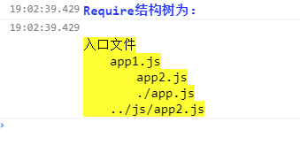

1.如选配带有标志的代码,是基于jquery开发，则需要先引入jquery。
2.载入一个空的js文件作为本库代码存放文件，然后在 config.html 进行选配代码粘入到此文件中并保存。
类型说明：
1.依赖jquery会以标志作为标识。
2.架构类或工具类会以标志作为标识。
调用方式：Yeffect.event.start("需要注册事件的元素名称指向",回调函数);
相同的事件注册方式兼容手指事件与鼠标事件，支持多点触摸(通过event.identifier区分);
参数说明：
Yeffect.event.start(1,2);
1. 接受事件的元素名称指向 如：".event-start";
2. 回调函数 如：function(e){};
function(1,2){}
1. 原生的event对象内置pageX，pageY,curent，preventDefault...等属性与方法;
2. 如果是手机端返回原生event对象的touches属性
指向绑定事件的对象
布局要求：1.无
示例效果：<div class="event-start">点击测试</div>
css部分
<style>
.event-start{width: 150px; height: 150px; border: 1px solid #666; background: #fff; line-height: 150px; text-align: center;}
</style>
<script>
Yeffect.event.start(".event-start",function(e){
alert("已按下");
});
</script>
调用方式：Yeffect.event.move("需要注册事件的元素名称指向",回调函数);
相同的事件注册方式兼容手指事件与鼠标事件，支持多点触摸(通过event.identifier区分);
参数说明：
Yeffect.event.move(1,2);
1. 接受事件的元素名称指向 如：".event-move";
2. 回调函数 如：function(e){};
function(1,2){}
1. 原生的event对象内置pageX，pageY,curent，preventDefault...等属性与方法; 新增属性(
deltaX 从开始位置当当前位置X方向上移动的距离;
deltaY 从开始位置当当前位置Y方向上移动的距离;
mousedown 如果为鼠标事件此属性为true则代表是数遍按下时移动否则代表未按下时移动,移动端没有此属性;
)
2. 如果是手机端返回原生event对象的touches属性
指向绑定事件的对象
布局要求：1.无
示例效果：<div class="event-move">当前位置</div>
css部分
<style>
.event-move{width: 200px; height: 200px; font-weight: normal; color: #333; border: 1px solid #666; background: #fff; line-height: 20px;}
</style>
<script>
Yeffect.event.move(".event-move",function(e){
$(this).html(
"鼠标X位置："+e.pageX+"<br>"+
"鼠标Y位置："+e.pageY+"<br>"+
"鼠标拖动X距离："+e.deltaX+"<br>"+
"鼠标拖动Y距离："+e.deltaY+"<br>"
)
});
</script>
调用方式：Yeffect.event.end("需要注册事件的元素名称指向",回调函数);
相同的事件注册方式兼容手指事件与鼠标事件，支持多点触摸(通过event.identifier区分);
参数说明：
Yeffect.event.end(1,2);
1. 接受事件的元素名称指向 如：".event-end";
2. 回调函数 如：function(e){};
function(1,2){}
1. 原生的event对象内置pageX，pageY,curent，preventDefault...等属性与方法; 新增属性(
deltaX 从开始位置当当前位置X方向上移动的距离;
deltaY 从开始位置当当前位置Y方向上移动的距离;
mousedown 如果为鼠标事件此属性为true则代表是数遍按下时移动否则代表未按下时移动,移动端没有此属性;
)
2. 如果是手机端返回原生event对象的touches属性
指向绑定事件的对象
布局要求：1.无
示例效果：<div class="event-end">点击测试</div>
css部分
<style>
.event-end{width: 150px; height: 150px; border: 1px solid #666; background: #fff; text-align: center;}
</style>
<script>
Yeffect.event.end(".event-end",function(e){
$(this).html("鼠标/手指松开时的位置为："+e.pageX+","+e.pageY);
});
</script>
<div class="eventCotent">在此区域内拖动小方块
<div class="events-div"></div>
</div>
<style>
.eventCotent{width: 400px; height: 400px; border: 1px solid #666; background: #fff; position: relative; overflow: hidden;}
.events-div{width:50px; height: 50px; position:absolute; background: #f00; left: 10px; top:20px; cursor: move;}
</style>
<script>
Yeffect.event.move(".eventCotent",function(e){
$(".events-div").css({"margin-left":e.deltaX,"margin-top":e.deltaY});
})
Yeffect.event.end(".eventCotent",function(e){
var enters=$(".events-div");
enters.css({left:parseInt(enters.css("left"))+parseInt(enters.css("margin-left")),top:parseInt(enters.css("top"))+parseInt(enters.css("margin-top")),"margin-left":0,"margin-top":0});
})
</script>
调用方式：Yeffect.clickTabs("鼠标控制的元素的名称指向","被控制的显示状态元素的名称指向","当前样式的名称");
在一个页面包含多组相同布局相同样式名称的tab选项卡效果时可调用一次调用添加所有效果（无需重命名）;
参数说明：
Yeffect.clickTabs(1,2,3);
1. 鼠标点击的元素名称指向 如：".tabNavs a";
2. 鼠标点击时实现切换的内容元素名称指向 如：".tabContents";
3. 控制块的当前样式名称 默认"current";(选填)
1. 每组效果不能有共同的父容器（父容器名字可以相同）
2. 第二个参数所指向的元素 用css设置为隐藏 例如：.tabNavs{ display:none; }
<div>
<div class="tabNavs"><a href="javascript:void(0)">选项一</a><a href="javascript:void(0)">选项二</a><a href="javascript:void(0)">选项三</a></div>
<div class="tabContents">
内容一
</div>
<div class="tabContents">
内容二
</div>
<div class="tabContents">
内容三
</div>
</div>
<br>
<div>
<div class="tabNavs"><a href="javascript:void(0)">选项A</a><a href="javascript:void(0)">选项B</a><a href="javascript:void(0)">选项C</a></div>
<div class="tabContents">
内容A
</div>
<div class="tabContents">
内容B
</div>
<div class="tabContents">
内容C
</div>
</div>
<style>
.tabNavs{height:35px; width:303px; border:1px solid #aaa; background:#eee; border-right:0px; position:relative;}
.tabNavs a{display:block; height:35px; line-height:35px; width:100px; border-right:1px solid #aaa; float:left; text-align:center; color:#333;}
.tabNavs a.current{background:#fff; height:36px;}
.tabContents{ display:none; width:302px; height:100px; border:1px solid #aaa; background:#fff; margin-top:-1px; font-size:14px;}
</style>
<script>
Yeffect.clickTabs(".tabNavs a",".tabContents","current");;
//////最后一个参数省略时会默认成"current"///////
</script>
调用方式：Yeffect.hoverTabs("鼠标控制的元素的名称指向","被控制的显示状态元素的名称指向","当前样式的名称");
在一个页面包含多组相同布局相同样式名称的tab选项卡效果时可调用一次调用添加所有效果（无需重命名）;
参数说明：
Yeffect.hoverTabs(1,2,3);
1. 鼠标滑入的元素名称指向 如：".HtabNavs a";
2. 鼠标滑入时实现切换的内容元素名称指向 如：".HtabContents";
3. 控制块的当前样式名称 默认"current";(选填)
1. 每组效果不能有共同的父容器（父容器名字可以相同）
2. 第二个参数所指向的元素 用css设置为隐藏 例如：.tabNavs{ display:none; }
<div>
<div class="HtabNavs"><a href="javascript:void(0)">选项一</a><a href="javascript:void(0)">选项二</a><a href="javascript:void(0)">选项三</a></div>
<div class="HtabContents">
内容一
</div>
<div class="HtabContents">
内容二
</div>
<div class="HtabContents">
内容三
</div>
</div>
<br>
<div>
<div class="HtabNavs"><a href="javascript:void(0)">选项A</a><a href="javascript:void(0)">选项B</a><a href="javascript:void(0)">选项C</a></div>
<div class="HtabContents">
内容A
</div>
<div class="HtabContents">
内容B
</div>
<div class="HtabContents">
内容C
</div>
</div>
<style>
.HtabNavs{height:35px; width:303px; border:1px solid #aaa; background:#eee; border-right:0px; position:relative;}
.HtabNavs a{display:block; height:35px; line-height:35px; width:100px; border-right:1px solid #aaa; float:left; text-align:center; color:#333;}
.HtabNavs a.current{background:#fff; height:36px;}
.HtabContents{ display:none; width:302px; height:100px; border:1px solid #aaa; background:#fff; margin-top:-1px; font-size:14px;}
</style>
<script>
Yeffect.hoverTabs(".HtabNavs a",".HtabContents","current");;
//////最后一个参数省略时会默认成"current"///////
</script>
Yeffect.hoverTab("鼠标控制的元素的名称指向","被控制的显示状态元素的名称指向","当前样式的名称");
使用方式同 Yeffect.hoverTabs一致; 唯一区别：该效果调用一次不支持同页面同名称的多个效果;
Yeffect.hoverTab2("鼠标控制的元素的名称指向","被控制的显示状态元素的名称指向1","被控制的显示状态元素的名称指向2","当前样式的名称");
Yeffect.hoverTab2(1,2,3,4);
1. 鼠标滑入的元素名称指向 如：".HtabNavs2 a";
2. 鼠标滑入时实现切换的内容元素名称指向 如：".HtabContents2a";
3. 鼠标滑入时实现切换的内容元素名称指向 如：".HtabContents2b";
4. 控制块的当前样式名称 默认"current";(选填)
<div class="HtabContents2a">A区域中的内容1</div>
<div class="HtabContents2a">A区域中的内容2</div>
<div class="HtabContents2a">A区域中的内容3</div>
<div class="HtabNavs2">
<a href="javascript:void(0)">tab导航1</a>
<a href="javascript:void(0)">tab导航2</a>
<a href="javascript:void(0)">tab导航3</a>
</div>
<div class="HtabContents2b">B区域中的内容1</div>
<div class="HtabContents2b">B区域中的内容2</div>
<div class="HtabContents2b">B区域中的内容3</div>
<style>
.HtabContents2a,.HtabContents2b{width:300px; height:50px; border:1px solid #ddd; font-size:20px; background:#fff; padding:5px;}
.HtabNavs2{width:312px; height:30px; line-height:30px; border:1px solid #ddd; border-right:0px; margin:5px 0px; background:#eee;}
.HtabNavs2 a{display:block; height:30px; width:103px; float:left; border-right:1px solid #ddd; text-align:center; color:#333;}
.HtabNavs2 a.current{background:#fff;}
</style>
<script>
Yeffect.hoverTab2(".HtabNavs2 a",".HtabContents2a",".HtabContents2b","current");
</script>
调用方式：Yeffect.clickTab("鼠标控制的元素的名称指向","被控制的显示状态元素的名称指向","当前样式的名称");
使用方式同 Yeffect.clickTabs 唯一区别：该效果调用一次不支持同页面通名称的多个效果;
调用方式：Yeffect.clickTab2("鼠标控制的元素的名称指向","被控制的显示状态元素的名称指向1","被控制的显示状态元素的名称指向2","当前样式的名称");
使用方式同 Yeffect.hoverTab2 唯一区别：促发的事件不同;
调用方式：Yeffect.vProductPictures("缩略图列表的父级容器名称指向","缩略图列表元素名称指向","缩略图能同时完整显示的数量","缩略图列表单项实际占用高度度减去height的值","大图的容器","缩略图的当前样式","向上箭头名称指向","向下箭头名称指向",缓动函数名);
Yeffect.vProductPictures(1,2,3,4,5,6,7,8,9);
1. 缩略图列表的父级容器名称指向 如：".Productul ul";
2. 缩略图列表元素名称指向 如：".Productul ul li";
3. 缩略图能同时完整显示的数量;
4. 缩略图列表单项实际占用宽度减去width的值(包括左右margin值上下padding值上下border上下值之和);
5. 主图的容器名称指向; 如：".ProductMain";
6. 缩略图当前样式 默认"current";(选填)
7. 向上箭头名称指向 默认"";(选填)
8. 向下箭头名称指向 默认"";(选填)
9. 缓动函数名 默认"linear";(选填)
1. 主图容器（第5个参数所指）内必须放入一张图片 src属性可以为空 也可以最缩略图第一张图片的src
2. 缩略图容器（第1个参数所指）父容器 需有一个容器 且具备 宽高、定位、超出隐藏 例如：.Productul { position:relative; overflow:hidden; width:62px; height:263px; }
3. 缩略图容器（第1个参数所指）的元素 需有一个容器 且具备 宽度、定位、超出隐藏 例如：.Productul ul { width:62px; position:absolute; }
4. 缩略图列表项（第2个参数所指）的元素 需要 具备相同的宽高 例如：.Productul ul li { width:60px; height:60px; }
5. 主图容器（第5个参数所指）内的图片的元素 且具备 宽度100%、高度100% 例如：.ProductMain img { width:100%; height:100%; }

<div class="ProductContent">
<div class="ProductMain"><img src="images/nreimg_01.jpg"></div>
<div class="Productul">
<ul>
<li><img src="images/nreimg_01.jpg"></li>
<li><img src="images/nreimg_02.jpg"></li>
<li><img src="images/nreimg_03.jpg"></li>
<li><img src="images/nreimg_04.jpg"></li>
<li><img src="images/nreimg_05.jpg"></li>
<li><img src="images/nreimg_03.jpg"></li>
<li><img src="images/nreimg_04.jpg"></li>
<li><img src="images/nreimg_05.jpg"></li>
</ul>
</div>
<div class="upArrow">∧</div>
<div class="downArrow">∨</div>
</div>
<style>
.ProductContent{width:400px; height:322px; position:relative;}
.Productul{position:relative; overflow:hidden; width:62px; height:263px; float:right; top:30px;}
.Productul ul{width:62px; position:absolute; left:0px; top:0px;}
.Productul ul li{width:60px; height:60px; border:1px solid #aaa; margin-bottom:5px; overflow:hidden; cursor:pointer; background:#000;}
.Productul ul li img{width:60px; height:60px; opacity:0.7; transition:opacity 0.3s linear;-webkit-transition:opacity 0.3s linear;}
.Productul ul li.current{border-color:#FDA10A;}
.Productul ul li.current img{opacity:1;}
.ProductMain{width:320px; height:320px; border:1px solid #aaa; float:left;}
.ProductMain img{width:100%; height:100%;}
.upArrow{width:60px; height:22px; border:1px solid #aaa; line-height:22px; position:absolute; top:0px; right:0px; text-align:center; font-size:12px; cursor:pointer; background:#ddd;}
.upArrow:hover{background:#eee;}
.downArrow{width:60px; height:22px; border:1px solid #aaa; line-height:22px; position:absolute; bottom:0px; right:0px; text-align:center; font-size:12px; cursor:pointer; background:#ddd;}
.downArrow:hover{background:#eee;}
</style>
<script>
Yeffect.vProductPictures(".Productul ul",".Productul ul li",4,7,".ProductMain","current",".upArrow",".downArrow","easeInOutCubic");
</script>
调用方式：Yeffect.hProductPictures("缩略图列表的父级容器名称指向","缩略图列表元素名称指向","缩略图能同时完整显示的数量","缩略图列表单项实际占用宽度减去width的值","大图的容器","缩略图的当前样式","向左箭头名称指向","向右箭头名称指向",缓动函数名);
Yeffect.hProductPictures(1,2,3,4,5,6,7,8,9);
1. 缩略图列表的容器名称指向 如：".hProductul ul";
2. 缩略图列表元素名称指向 如：".hProductul ul li";
3. 缩略图能同时完整显示的数量;
4. 缩略图列表单项实际占用宽度减去width的值(包括左右margin值左右padding值左右border左右值之和);
5. 主图的容器名称指向; 如：".hProductMain";
6. 缩略图当前样式 默认"current";(选填)
7. 向左箭头名称指向 默认"";(选填)
8. 向右箭头名称指向 默认"";(选填)
9. 缓动函数名 默认"linear";(选填)
1. 主图容器（第5个参数所指）内必须放入一张图片 src属性可以为空 也可以最缩略图第一张图片的src
2. 缩略图容器（第1个参数所指）父容器 需有一个容器 且具备 宽高、定位、超出隐藏 例如：.hProductul { position:relative; overflow:hidden; width:263px; height:62px; }
3. 缩略图容器（第1个参数所指）的元素 需有一个容器 且具备 高度、定位、超出隐藏 例如：.hProductul ul { height:62px; position:absolute; }
4. 缩略图列表项（第2个参数所指）的元素 需要 具备相同的宽高、左浮动 例如：.hProductul ul li { width:60px; height:60px; float:left; }
5. 主图容器（第5个参数所指）内的图片的元素 且具备 宽度100%、高度100% 例如：.hProductMain img { width:100%; height:100%; }
<div class="hProductContent">
<div class="hProductMain"><img src="images/nreimg_01.jpg"></div>
<div class="hProductul">
<ul>
<li><img src="images/nreimg_01.jpg"></li>
<li><img src="images/nreimg_02.jpg"></li>
<li><img src="images/nreimg_03.jpg"></li>
<li><img src="images/nreimg_04.jpg"></li>
<li><img src="images/nreimg_05.jpg"></li>
<li><img src="images/nreimg_03.jpg"></li>
<li><img src="images/nreimg_04.jpg"></li>
<li><img src="images/nreimg_05.jpg"></li>
</ul>
</div>
<div class="leftArrow"><</div>
<div class="rightArrow">></div>
</div>
<style>
.hProductContent{width:322px; height:400px; position:relative;}
.hProductul{position:relative; overflow:hidden; width:263px; height:62px; left:30px;}
.hProductul ul{height:62px; position:absolute; left:0px; top:0px;}
.hProductul ul li{width:60px; height:60px; border:1px solid #aaa; margin-right:5px; overflow:hidden; cursor:pointer; background:#000; float:left;}
.hProductul ul li img{width:60px; height:60px; opacity:0.7; transition:opacity 0.3s linear;-webkit-transition:opacity 0.3s linear;}
.hProductul ul li.current{border-color:#FDA10A;}
.hProductul ul li.current img{opacity:1;}
.hProductMain{width:320px; height:320px; margin-bottom:15px; border:1px solid #aaa;}
.hProductMain img{width:100%; height:100%;}
.leftArrow{width:22px; height:60px; border:1px solid #aaa; line-height:60px; position:absolute; bottom:0px; left:0px; text-align:center; font-size:12px; cursor:pointer; background:#ddd;}
.leftArrow:hover{background:#eee;}
.rightArrow{width:22px; height:60px; border:1px solid #aaa; line-height:60px; position:absolute; bottom:0px; right:0px; text-align:center; font-size:12px; cursor:pointer; background:#ddd;}
.rightArrow:hover{background:#eee;}
</style>
<script>
Yeffect.hProductPictures(".hProductul ul",".hProductul ul li",4,7,".hProductMain","current",".leftArrow",".rightArrow","easeInOutCubic");
</script>
Yeffect.magnifier("用于指示当前划入位置的半透明区域块名称指向","响应鼠标划入图的容器名称指向","大图容器名称指向");
Yeffect.magnifier(1,2,3);
1. 用于指示当前划入位置的半透明区域块名称指向 如：".fierbox";
2. 响应鼠标划入图的容器名称指向 如：".fierContent";
3. 大图容器名称指向 如：".fierContentM";
1. 半透明区域块元素（第1个参数所指）必须放在 响应鼠标容器（第2个参数所指）中 且宽度是（第2个参数所指元素）宽高的一半 且具备 高度、宽度、定位、透明度、隐藏、背景色等属性 例如：.fierbox { width:150px; height:120px; position:absolute; opacity:0.5; background:#EC9D09; }
2. 响应鼠标划入图的容器（第2个参数所指） 必须具备 定位、宽度、高度、超出隐藏 例如：.fierContent { width:300px; height:240px; position:relative; overflow:hidden; }
3. 响应鼠标划入图的容器（第2个参数所指）里面需要放入一张图片且宽度高度均为100% 例如：.fierContent img { width:100%; height:100%; }
4. 大图容器（第3个参数所指） 必须具备 宽高为（第2个参数所指）相等 且要有 定位、隐藏、超出隐藏等属性 例如：.fierContentM { width:300px; height:240px; position:absolute; display:none; overflow:hidden; }

<div class="magnifier">
<div class="fierContent"><img src="images/index32.jpg"><p class="fierbox"></p></div>
<div class="fierContentM"></div>
</div>
<style>
.fierbox{width:150px; height:120px; position:absolute; opacity:0.5; background:#EC9D09; display:none; margin:0px; padding:0px; cursor:move;}
.fierContent{width:300px; height:240px; position:relative; overflow:hidden;}
.fierContent img{width:100%; height:100%;}
.fierContentM{width:300px; height:240px; position:absolute; display:none; overflow:hidden; top:0px; right:0px;}
.magnifier{width:630px; height:240px; position:relative;}
</style>
<script>
Yeffect.magnifier(".fierbox",".fierContent",".fierContentM");
</script>
Yeffect.largerImg("要滑入的图片名称指向","放大后的图片宽度","放大后的图片高度");
鼠标悬浮到指定的图片上500毫秒不移动 则在改图的旁边显示 放大版的图片;
参数说明：
Yeffect.largerImg(1,2,3);
1. 要滑入的图片名称指向 如：".ListImgBox img";
2. 放大后的图片宽度 默认 500 ; (选填)
3. 放大后的图片高度 默认 500 ; (选填)
1. 无要求


<div class="ListImgBox"><img src="images/nreimg_01.jpg"><img src="images/nreimg_02.jpg"><div><img src="images/nreimg_03.jpg"><img src="images/nreimg_04.jpg"></div><img src="images/nreimg_05.jpg"></div>
<style>
.ListImgBox img{width:140px; height:80px; margin-right:10px;}
</style>
<script>
Yeffect.largerImg(".ListImgBox img",350,200);
</script>
调用方式：Yeffect.marqueeEffect("移动的元素名称指向","容器内的单位元素名称指向","单位时间","单位像素","鼠标划入是否暂停");
Yeffect.marqueeEffect(1,2,3,4,5);
1. 执行效果的外层容器名称指向 如：".marq ul";
2. 执行效果的单个元素的名称指向 如：".marq ul li";
3. 移动一次的单位时间 以毫秒为单位 数值越小速度越快 默认30;(选填)
4. 移动一次的单位距离 以px单位 数值越大速度越快 默认 1;(选填)
5. 鼠标悬停时是否暂停滚动 true或false 默认true;(选填)
1. 第一个参数所指定元素的父容器 需要具有 定位、宽高、超出隐藏 等属性 例如: .marq { position:relative; width:300px; height:30px; overflow:hidden; }
2. 第一个参数所指定的元素要具有 定位、高度 属性 例如：.marq ul { position:absolute; height:30px; }
2. 第二个参数所指定的元素要具有 左浮动 属性 例如：.marq ul li { float:left; }
- marqueeEffect效果的示例
- +第二个元素内的文本
- +第三个元素的文本
- 还可以有更多的元素
<div class="marq">
<ul>
<li>marqueeEffect效果的示例</li>
<li>+第二个元素内的文本</li>
<li>+第三个元素的文本</li>
<li>还可以有更多的元素</li>
</ul>
</div>
<style>
.marq{position:relative; width:300px; height:30px; overflow:hidden; background:#fff; border:1px solid #eee;}
.marq ul{position:absolute; height:30px;}
.marq ul li{float:left; height:30px; line-height:30px;}
</style>
<script>
Yeffect.marqueeEffect(".marq ul",".marq ul li");
//Yeffect.marqueeEffect(".marq ul",".marq ul li",30,1,true);//////特殊需求时可根据后面三个参数设置///////
</script>
调用方式：Yeffect.alertShow("提示文本信息","title信息","title背景颜色","是否是confirm","确定按钮的回调函数","确定按钮文本","取消按钮文本");
Yeffect.alertShow(1,2,3,4,5,6,7);
1. 需要提示文本信息 如："这是一个测试文本";
2. 提示窗的title文本信息 默认"系统提示"; (选填)
3. title条的背景颜色 默认"#1abc9c"; (选填)
4. 是否为confirm弹窗 默认false;(选填)
5. 点击确定按钮时的回调函数 默认function(){}; (选填)
6. 确定按钮文本内容 默认"确定";(选填)
7. 取消按钮文本内容 默认"取消";(选填)
无要求,需要用到的时候直接调用即可！
示例效果： 全部源码：
<a href="javascript:void(0)" class="alertClass">点击查看 普通alertShow</a>
<a href="javascript:void(0)" class="confirmClass">点击查看 confirm类型的alertShow</a>
<style>
.alertClass,.confirmClass{display:block; display:block; width:200px; text-align:center; background:#C7070B; border-radius:5px; color:#fff; margin-bottom:10px; margin-top:5px;}
</style>
<script>
$(".alertClass").click(function(){
Yeffect.alertShow("显示了一个普通的alertShow提示窗");
});
$(".confirmClass").click(function(){
Yeffect.alertShow("促发一个confirm的alertShow提示窗","confirm的title","#f00",true,function(){
alert("您点击了ok按钮");
},"ok","cancel");
});
</script>
Yeffect.mAlert("弹出的文本内容","自动关闭时间","是否允许滑动");
Yeffect.mAlert(1,2);
1. 弹出的文本内容 默认 ""
2. 自动关闭时间 单位毫秒 默认3000 ; (选填)
3. 是否允许滑动 单位毫秒 默认false ; (选填)
无;
示例效果： 全部源码：
<a href="javascript:void(0)" class="linkbtn malertshow">点击弹出一个手机版弹窗</a>
<style>
</style>
<script>
$(".malertshow").click(function(){
Yeffect.mAlert("这是弹出的一个测试弹窗");
})
/////返回一个函数,调用时可以手动关闭弹窗///////
</script>
调用方式：Yeffect.asyncloadingList("列表的容器对象","列表项","初始加载数","每次加载数","加载提示信息的元素","加载时间动效时间");
Yeffect.asyncloadingList(1,2,3,4,5,6);
1. 列表的容器名称指向 如：".asynload";
2. 列表项元素名称指向 如：".asynload li";
3. 列表初始显示的条数 默认 20 ; (选填)
4. 每一次加载列表项的数量 默认 20 ; (选填)
5. 加载过程中用于提示用户‘正在加载中’的元素名称指向 默认 "" ; (选填)
6. 伪加载过程的时间值 单位毫秒 默认 1000 ; (选填)
1. 列表外层需要有一个容器
2. 最好有一个家在时提示用户的dom元素
<ul class="loadingUl">
<li><img src="../images/nreimg_01.jpg">列表项内容一</li>
<li><img src="../images/nreimg_02.jpg">列表项内容二</li>
<li><img src="../images/nreimg_03.jpg">列表项内容三</li>
<li><img src="../images/nreimg_04.jpg">列表项内容四</li>
<li><img src="../images/nreimg_05.jpg">列表项内容五</li>
<li><img src="../images/nreimg_01.jpg">列表项内容六</li>
<li><img src="../images/nreimg_02.jpg">列表项内容七</li>
<li><img src="../images/nreimg_03.jpg">列表项内容八</li>
<li><img src="../images/nreimg_04.jpg">列表项内容久</li>
<li><img src="../images/nreimg_05.jpg">列表项内容十</li>
<li><img src="../images/nreimg_01.jpg">列表项内容十一</li>
<li><img src="../images/nreimg_02.jpg">列表项内容十二</li>
<li><img src="../images/nreimg_03.jpg">列表项内容十三</li>
<li><img src="../images/nreimg_04.jpg">列表项内容十四</li>
<li><img src="../images/nreimg_05.jpg">列表项内容十五</li>
<li><img src="../images/nreimg_01.jpg">列表项内容十六</li>
<li><img src="../images/nreimg_02.jpg">列表项内容十七</li>
<li><img src="../images/nreimg_03.jpg">列表项内容十八</li>
<li><img src="../images/nreimg_04.jpg">列表项内容十九</li>
<li><img src="../images/nreimg_05.jpg">列表项内容二十</li>
<li><img src="../images/nreimg_01.jpg">列表项内容二十一</li>
<li><img src="../images/nreimg_02.jpg">列表项内容二十二</li>
<li><img src="../images/nreimg_03.jpg">列表项内容二十三</li>
<li><img src="../images/nreimg_04.jpg">列表项内容二十四</li>
<li><img src="../images/nreimg_05.jpg">列表项内容二十五</li>
</ul>
<div class="loadMask"><img src="../images/正在加载中.gif"></div>
<style>
.loadingUl li{height:160px; background:#e9e9e9; line-height:160px; font-size:40px; margin-bottom:10px;}
.loadingUl li img{display:block; float:left; margin-right:20px;}
.loadMask{position:fixed; width:100%; text-align:center;height:92px; padding-top:5px; background:#efefef; left:0px; bottom:0px; font-size:30px; display:none;}
</style>
<script>
Yeffect.asyncloadingList(".loadingUl",".loadingUl li",6,5,".loadMask",1500);
</script>
调用方式：Yeffect.adddragupEvent("触发时的回调函数","距离底部多少像素促发");
Yeffect.adddragupEvent(1,2);
1. 触发时的回调函数（ajax的的相关代码通过此函数促发） 如：function(){};
2. 距离底部多少像素促发（如果设置了最后一次的设置会成为新的默认值） 默认：50;(选填)
1. 为防止多次促发可申明一个布尔变量促发加载时设为false,加载成功时设为true,是否进行新的加载通过该布尔变量决定;
<ul class="loadingUl">
<li><img src="../images/nreimg_01.jpg">列表项内容一</li>
<li><img src="../images/nreimg_02.jpg">列表项内容二</li>
<li><img src="../images/nreimg_03.jpg">列表项内容三</li>
<li><img src="../images/nreimg_04.jpg">列表项内容四</li>
<li><img src="../images/nreimg_05.jpg">列表项内容五</li>
<li><img src="../images/nreimg_01.jpg">列表项内容六</li>
<li><img src="../images/nreimg_02.jpg">列表项内容七</li>
<li><img src="../images/nreimg_03.jpg">列表项内容八</li>
<li><img src="../images/nreimg_04.jpg">列表项内容久</li>
<li><img src="../images/nreimg_05.jpg">列表项内容十</li>
<li><img src="../images/nreimg_01.jpg">列表项内容十一</li>
</ul>
<div class="loadMask"><img src="../images/正在加载中.gif"></div>
<style>
.loadingUl li{height:160px; background:#e9e9e9; line-height:160px; font-size:40px; margin-bottom:10px;}
.loadingUl li img{display:block; float:left; margin-right:20px;}
.loadMask{position:fixed; width:100%; text-align:center;height:92px; padding-top:5px; background:#efefef; left:0px; bottom:0px; font-size:30px; display:none;}
</style>
<script>
var ajaxhtml="<li><img src='../images/nreimg_02.jpg'>列表项内容十二</li><li><img src='../images/nreimg_03.jpg'>列表项内容十三</li><li><img src='../images/nreimg_04.jpg'>列表项内容十四</li><li><img src='../images/nreimg_05.jpg'>列表项内容十五</li><li><img src='../images/nreimg_01.jpg'>列表项内容十六</li><li><img src='../images/nreimg_02.jpg'>列表项内容十七</li><li><img src='../images/nreimg_03.jpg'>列表项内容十八</li><li><img src='../images/nreimg_04.jpg'>列表项内容十九</li><li><img src='../images/nreimg_05.jpg'>列表项内容二十</li><li><img src='../images/nreimg_01.jpg'>列表项内容二十一</li><li><img src='../images/nreimg_02.jpg'>列表项内容二十二</li><li><img src='../images/nreimg_03.jpg'>列表项内容二十三</li><li><img src='../images/nreimg_04.jpg'>列表项内容二十四</li><li><img src='../images/nreimg_05.jpg'>列表项内容二十五</li>";
var loadingUl=$(".loadingUl");
var loadMask=$(".loadMask");
var isload=true;
Yeffect.adddragupEvent(function(){
if(!isload) return;
isload=false;
loadMask.show();
setTimeout(function(){
loadMask.hide();
loadingUl.append(ajaxhtml);
isload=true;
},1000);
},200)
</script>
调用方式：Yeffect.foldMenu("接受点击的dom元素名称指向","控制展开父级的样式名称","是否可同时展开多个","同时容纳点击项与展开内容的父容器名称");
Yeffect.foldMenu(1,2,3,4);
1. 接受点击的dom元素名称指向 如：".foldMenu li h2";
2. 控制展开父级的样式名称 如："show";
3. 是否可同时展开多个 默认 false ; (选填)
4. 同时容纳点击项与展开内容的父容器名称 默认选中父级 ; (选填)
1. 内容部分默认隐藏 例如：.foldMenu li .P { display:none; }
2. 接受点击事件的dom元素与展开内容的元素 有一个共同的父容器 例如：".foldMenu li h2"与".foldMenu li .P"有共同的父容器"li"
3. 展开父级样式 下面的 内容容器为隐藏 例如：.foldMenu li.show .P { display:block; }
-
foldMenu标题A
foldMenu内容a
foldMenu内容a -
foldMenu标题B
foldMenu内容b
foldMenu内容b -
foldMenu标题C
foldMenu内容c
foldMenu内容b -
foldMenu标题D
foldMenu内容d
foldMenu内容b -
foldMenu标题E
foldMenu内容e
foldMenu内容b
<ul class="foldMenu">
<li>
<h2>foldMenu标题A</h2>
<div class="P">foldMenu内容a<br>foldMenu内容a</div>
</li>
<li>
<h2>foldMenu标题B</h2>
<div class="P">foldMenu内容b<br>foldMenu内容b</div>
</li>
<li>
<h2>foldMenu标题C</h2>
<div class="P">foldMenu内容c<br>foldMenu内容c</div>
</li>
<li>
<h2>foldMenu标题D</h2>
<div class="P">foldMenu内容d<br>foldMenu内容d</div>
</li>
<li>
<h2>foldMenu标题E</h2>
<div class="P">foldMenu内容e<br>foldMenu内容e</div>
</li>
</ul>
<style>
.foldMenu li{width:300px; border:1px solid #ddd; margin-bottom:5px;}
.foldMenu li h2{height:30px; line-height:30px; background:#7195C5; cursor:pointer; font-size:16px; color:#fff; padding:0px 10px;}
.foldMenu li .P{display:none; background:#fff; font-size:14px; line-height:20px; padding:5px 10px;}
.foldMenu li.show .P{display:block;}
</style>
<script>
Yeffect.foldMenu(".foldMenu li h2","show");
</script>
Yeffect.fullAnimatbanner("banner集合容器元素名称指向","单张元素名称指向","显示状态的小点名称指向","左按钮名称指向","右按钮名称指向","小点上的当前样式名称","自动切换的间隔时间","缓动过程时间选填默认300","鼠标悬停时是否暂停",缓动函数名选填);
可以通过百分比的方式设置宽度，宽度变化时效果正常;
参数说明：
Yeffect.fullAnimatbanner(1,2,3,4,5,6,7,8,9,10);
1. banner集合容器元素名称指向 如：".fullBanner ul";
2. 单张banner元素名称指向 如：".fullBanner ul li";
3. 显示banner当前状态的小点名称指向 如：".fullBanner p i"; 默认 "" (选填)
4. 左按钮名称指向 如：".fullLeft"; 默认 "" (选填)
5. 右按钮名称指向 如：".fullRight"; 默认 "" (选填)
6. 小点上的当前样式名称 默认 "current" (选填)
7. 自动滚动一次的间隔时间 单位毫秒 默认 5000 (选填)
8. 缓动过程时间选填默认 单位毫秒 默认 300 ; (选填)
9. 鼠标悬停banner上时是否暂停bnnaer的切换效果 默认 false ; (选填)
10. banner切换所用的缓动函数名称 默认 "linear" ; (选填)
1. banner集合容器（第1个参数所指) 必须具备 高度、宽度、定位、超出隐藏 例如：.fullBanner ul { position:absolute; width:100%; height:100%; overflow:hidden; left:0px; top:0px; }
2. 列表容器元素（第2个参数所指） 必须具备 定位、宽度100%、高度100%、超出隐藏、文本居中 例如：.fullBanner ul li { position:absolute; width:100%; height:100%; overflow:hidden; left:0px; top:0px; overflow:hidden; text-align:center; }
3. 列表项元素图片（第2个参数所指）内的图片 必须具备 高度100% 例如：.fullBanner ul li img { height:100%; }

<div class="fullBanner">
<a class="fullLeft" href="javascript:void(0)"></a>
<a class="fullRight" href="javascript:void(0)"></a>
<ul>
<li><a><img src="images/dianpuM_01.jpg"></a><b>第一张banner的标题可以不填的</b><p>第一张banner的内容也可以不填的</p></li>
<li><a><img src="images/dianpuM_02.jpg"></a><b>第二张banner的标题可以不填的</b><p>第二张banner的内容也可以不填的</p></li>
<li><a><img src="images/dianpuM_03.jpg"></a><b>第三张banner的标题可以不填的</b><p>第三张banner的内容也可以不填的</p></li>
</ul>
<p><i></i><i></i><i></i></p>
</div>
<style>
.fullBanner{width:30%; max-width:599px; height:200px; position:relative; margin-left:50px;}
.fullBanner ul{position:absolute; width:100%; height:100%; overflow:hidden; left:0px; top:0px;}
.fullBanner ul li{position:absolute; width:100%; height:100%; overflow:hidden; left:0px; top:0px; overflow:hidden; text-align:center;}
.fullBanner ul li img{height:100%;}
.fullBanner ul li a{display:block; height:100%; position:absolute; width:3000px; left:50%; margin-left:-1500px;}
.fullBanner>p{position:absolute; height:0px; line-height:0px; text-align:center; width:100%; margin:0px; padding:0px; left:0px; bottom:10px; z-index:10;}
.fullBanner>p i{display:inline-block; width:5px; height:5px; border-radius:5px; background:#fff; margin:0px 3px; cursor:pointer;}
.fullBanner>p i.current{background:#F1B503;}
.fullLeft{width:30px; height:50px; position:absolute; left:-50px; top:75px; background:url(images/leftbtn.png) left center no-repeat; cursor:pointer; z-index:10;}
.fullRight{width:30px; height:50px; position:absolute; right:-50px; top:75px; background:url(images/rightbtn.png) right center no-repeat; cursor:pointer; z-index:10;}
/*为banner图增加的一些特殊效果时所用样式,普通banner并不需要,其他banner方法均支持此添加特效方式*/
.fullBanner ul li b{display:block; position:absolute; width:100%; left:0px; top:20px; text-align:center; font-size:20px; color:#000; font-weight:bold; transition:all cubic-bezier(0.3,0.7,0.7,0.9) 0.5s; -webkit-transition:all cubic-bezier(0.3,0.7,0.7,0.9) 0.5s; transform:translateY(100px);-webkit-transform:translateY(100px); opacity:0;}
.fullBanner ul li p{margin:0px; padding:0px; left:0px; width:100%;font-size:18px; color:#000; position:absolute; left:0px; bottom:20px; height:30px; font-weight:bold;transition:all cubic-bezier(0.3,0.7,0.9,1.2) 0.5s 0.5s;-webkit-transition:all cubic-bezier(0.3,0.7,0.9,1.2) 0.5s 0.5s; transform:translateX(-100px);-webkit-transform:translateX(-100px); opacity:0;}
.fullBanner ul li:nth-child(2n) p{ transform:translateX(100px);-webkit-transform:translateX(100px);}
.fullBanner ul li.current *{transform:translate(0px,0px) !important;-webkit-transform:translate(0px,0px) !important; opacity:1; text-shadow:0px 0px 10px rgba(255,255,255,100);}
</style>
<script>
Yeffect.fullAnimatbanner(".fullBanner ul",".fullBanner ul li",".fullBanner>p i",".fullLeft",".fullRight","current",5000,500,true,"easeInOutSine");
</script>
Yeffect.fadeBanner("banner单位元素名称指向","显示状态的小点名称指向","左按钮名称指向","右按钮名称指向","小点上的当前样式名称","自动切换的间隔时间","缓动过程时间选填默认300","是否支持鼠标划入暂停",缓动函数名选填);
Yeffect.fadeBanner(1,2,3,4,5,6,7,8,9);
1. 单张banner元素名称指向 如：".fadeBanner ul li";
2. 显示banner当前状态的小点名称指向 如：".fadeBanner p i"; 默认 "" (选填)
3. 左按钮名称指向 如：".fadeLeft"; 默认 "" (选填)
4. 右按钮名称指向 如：".fadeRight"; 默认 "" (选填)
5. 小点上的当前样式名称 默认 "current" (选填)
6. 自动滚动一次的间隔时间 单位毫秒 默认 5000 (选填)
7. 缓动过程时间选填默认 单位毫秒 默认 300 ; (选填)
8. 鼠标悬停banner上时是否暂停bnnaer的切换效果 默认 false ; (选填)
9. banner切换所用的缓动函数名称 默认 "linear" ; (选填)
1. banner单项元素（第1个参数所指) 的父容器 必须具备 高度、宽度、定位 例如：.fadeBanner ul { position:absolute; width:100%; height:100%; }
2. banner单项元素（第1个参数所指） 必须具备 定位、宽度100%、高度100%、超出隐藏、设置一个背景色 例如：.fadeBanner ul li { position:absolute; width:100%; height:100%; overflow:hidden; left:0px; top:0px; overflow:hidden;background:#fff; }
3. 列表项元素图片（第1个参数所指）内的图片 必须具备 高度100%、宽度100% 例如：.fadeBanner ul li img { height:100%; width:100%; }
4. 如果有 小点元素或左右按钮等元素 需设置 z-index:大于100的数 例如：.fadeBanner>p { z-index:101; }
<div class="fadeBanner">
<a class="fadeLeft" href="javascript:void(0)"></a>
<a class="fadeRight" href="javascript:void(0)"></a>
<ul>
<li><img src="images/dianpuM_01.jpg"></li>
<li><img src="images/dianpuM_02.jpg"></li>
<li><img src="images/dianpuM_03.jpg"></li>
<li><img src="images/dianpuM_04.jpg"></li>
</ul>
<p><i></i><i></i><i></i><i></i></p>
</div>
<style>
.fadeBanner{width:599px; height:200px; position:relative; margin-left:50px;}
.fadeBanner ul{position:absolute; width:100%; height:100%; overflow:hidden; left:0px; top:0px;}
.fadeBanner ul li{position:absolute; width:100%; height:100%; overflow:hidden; left:0px; top:0px; overflow:hidden; text-align:center; background:#fff;}
.fadeBanner ul li img{height:100%; width:100%;}
.fadeBanner>p{position:absolute; height:0px; line-height:0px; text-align:center; width:100%; margin:0px; padding:0px; left:0px; bottom:10px; z-index:101;}
.fadeBanner>p i{display:inline-block; width:5px; height:5px; border-radius:5px; background:#fff; margin:0px 3px; cursor:pointer;}
.fadeBanner>p i.current{background:#F1B503;}
.fadeLeft{width:30px; height:50px; position:absolute; left:-50px; top:75px; background:url(images/leftbtn.png) left center no-repeat; cursor:pointer; z-index:10;}
.fadeRight{width:30px; height:50px; position:absolute; right:-50px; top:75px; background:url(images/rightbtn.png) right center no-repeat; cursor:pointer; z-index:10;}
</style>
<script>
Yeffect.fadeBanner(".fadeBanner ul li",".fadeBanner>p i",".fadeLeft",".fadeRight","current",5000,500,true,"easeInOutSine");
</script>
Yeffect.hBannerLoop("banner集合容器元素名称指向","单张元素名称指向","显示状态的小点名称指向","左按钮名称指向","右按钮名称指向","小点上的当前样式名称","自动切换的间隔时间","单张banner所占用的宽度减去单张banner的width值",缓动过程时间选填默认300,"鼠标悬停时是否暂停",缓动函数名选填);
宽度为固定宽度的水平方向滚动的banner适用，可拓展为别的效果
参数说明：
Yeffect.hBannerLoop(1,2,3,4,5,6,7,8,9,10,11);
1. banner集合容器元素名称指向 如：".hBanner ul";
2. 单张banner元素名称指向 如：".hBanner ul li";
3. 显示banner当前状态的小点名称指向 如：".hBanner p i"; 默认 "" (选填)
4. 左按钮名称指向 如：".hBannerLeft"; 默认 "" (选填)
5. 右按钮名称指向 如：".hBannerRight"; 默认 "" (选填)
6. 小点上的当前样式名称 默认 "current" (选填)
7. 自动滚动一次的间隔时间 单位毫秒 默认 5000 (选填)
8. 缓动过程时间选填默认 单位毫秒 默认 300 ; (选填)
9. 单张banner实际占用宽度减去width的值(包括左右margin值左右padding值左右border左右值之和); 默认 0 ; (选填)
10. 鼠标悬停banner上时是否暂停bnnaer的切换效果 默认 false ; (选填)
11. banner切换所用的缓动函数名称 默认 "linear" ; (选填)
1. banner集合容器（第1个参数所指) 须一层父容器且具备 宽度、高度、定位、超出隐藏 例如：.hBanner .ulcontent { height:150px; position:absolute; width:100%; overflow:hidden; }
2. banner集合容器（第1个参数所指) 必须具备 高度、定位、超出隐藏 例如：.hBanner ul { position:absolute;height:100%; overflow:hidden; left:0px; top:0px; }
3. 列表容器元素（第2个参数所指） 必须具备 宽度、高度、左浮动 例如：.hBanner ul li { pfloat:left; height:150px; width:300px; }
<div class="hBanner">
<a class="hBannerLeft" href="javascript:void(0)"></a>
<a class="hBannerRight" href="javascript:void(0)"></a>
<div class="ulcontent">
<ul>
<li><img src="images/dianpuM_01.jpg"></li>
<li><img src="images/dianpuM_02.jpg"></li>
<li><img src="images/dianpuM_03.jpg"></li>
<li><img src="images/dianpuM_04.jpg"></li>
</ul>
</div>
<p><i></i><i></i><i></i><i></i></p>
</div>
<button class="tuozhan">点击此处拓展为横向能同时显示3张的图集效果</button>
<style>
.hBanner{width:300px; height:150px; position:relative; margin-left:50px;}
.ulcontent{height:150px; position:absolute; width:100%; overflow:hidden;}
.hBanner ul{position:absolute; height:150px; overflow:hidden; left:0px; top:0px;}
.hBanner ul li{float:left; height:150px; width:300px; margin-right:5px; overflow:hidden; border-radius:5px;}
.hBanner ul li img{width:300px; height:150px;}
.hBanner>p{position:absolute; height:0px; line-height:0px; text-align:center; width:100%; margin:0px; padding:0px; left:0px; bottom:10px;}
.hBanner>p i{display:inline-block; width:5px; height:5px; border-radius:5px; background:#fff; margin:0px 3px; cursor:pointer;}
.hBanner>p i.current{background:#F1B503;}
.hBannerLeft{width:30px; height:50px; position:absolute; left:-50px; top:50px; background:url(images/leftbtn.png) left center no-repeat; cursor:pointer; z-index:10;}
.hBannerRight{width:30px; height:50px; position:absolute; right:-50px; top:50px; background:url(images/rightbtn.png) right center no-repeat; cursor:pointer; z-index:10;}
.tuozhan{background:#BC0A0D; color:#fff; border:0px; border-radius:5px; margin-top:10px; cursor:pointer;}
</style>
<script>
Yeffect.hBannerLoop(".hBanner ul",".hBanner ul li",".hBanner>p i",".hBannerLeft",".hBannerRight","current",5000,5,500,true,"easeInOutSine");
////////下面的代码可以忽略//////////
var istuoh=false;
$(".tuozhan").click(function(){
if(!istuoh){
$(".hBanner").width(910);
$(this).text("点击此处拓展回banner效果");
}else{
$(".hBanner").width(300);
$(this).text("点击此处拓展为横向能同时显示3张的图集效果");
}
istuoh=!istuoh;
})
</script>
Yeffect.hBannerLoop("banner集合容器元素名称指向","单张元素名称指向","显示状态的小点名称指向","左按钮名称指向","右按钮名称指向","小点上的当前样式名称","自动切换的间隔时间","单张banner所占用的高度度减去单张banner的height值",缓动过程时间选填默认300,"鼠标悬停时是否暂停",缓动函数名选填);
宽度为固定宽度的垂直方向滚动的banner适用，可拓展为别的效果
参数说明：
Yeffect.vBannerLoop(1,2,3,4,5,6,7,8,9,10,11);
1. banner集合容器元素名称指向 如：".vBanner ul";
2. 单张banner元素名称指向 如：".vBanner ul li";
3. 显示banner当前状态的小点名称指向 如：".vBanner p i"; 默认 "" (选填)
4. 按钮名称指向 如：".vBannerLeft"; 默认 "" (选填)
5. 右按钮名称指向 如：".vBannerRight"; 默认 "" (选填)
6. 小点上的当前样式名称 默认 "current" (选填)
7. 自动滚动一次的间隔时间 单位毫秒 默认 5000 (选填)
8. 缓动过程时间选填默认 单位毫秒 默认 300 ; (选填)
9. 单张banner实际占用高度减去height的值(包括上下margin值上下padding值上下border值之和); 默认 0 ; (选填)
10. 鼠标悬停banner上时是否暂停bnnaer的切换效果 默认 false ; (选填)
11. banner切换所用的缓动函数名称 默认 "linear" ; (选填)
1. banner集合容器（第1个参数所指) 须一层父容器且具备 宽度、高度、定位、超出隐藏 例如：.Banner .ulcontent { height:150px; position:absolute; width:100%; overflow:hidden; }
2. banner集合容器（第1个参数所指) 必须具备 宽度、定位、超出隐藏 例如：.vBanner ul { position:absolute;width:300px; overflow:hidden; left:0px; top:0px; }
3. 列表容器元素（第2个参数所指） 必须具备 宽度、高度 例如：.vBanner ul li { height:150px; width:300px; }
<div class="vBanner">
<a class="vBannerLeft" href="javascript:void(0)"></a>
<a class="vBannerRight" href="javascript:void(0)"></a>
<div class="ulcontent">
<ul>
<li><img src="images/dianpuM_01.jpg"></li>
<li><img src="images/dianpuM_02.jpg"></li>
<li><img src="images/dianpuM_03.jpg"></li>
<li><img src="images/dianpuM_04.jpg"></li>
</ul>
</div>
<p><i></i><i></i><i></i><i></i></p>
</div>
<button class="vtuozhan">点击此处拓展为纵向能同时显示3张的图集效果</button>
<style>
.vBanner{width:300px; height:150px; position:relative; margin-left:50px;}
.ulcontent{height:100%; position:absolute; width:100%; overflow:hidden;}
.vBanner ul{position:absolute; width:300px; overflow:hidden; left:0px; top:0px;}
.vBanner ul li{height:150px; width:300px; margin-bottom:5px; overflow:hidden; border-radius:5px;}
.vBanner ul li img{width:300px; height:150px;}
.vBanner>p{position:absolute; height:0px; line-height:0px; text-align:center; width:100%; margin:0px; padding:0px; left:0px; bottom:10px;}
.vBanner>p i{display:inline-block; width:5px; height:5px; border-radius:5px; background:#fff; margin:0px 3px; cursor:pointer;}
.vBanner>p i.current{background:#F1B503;}
.vBannerLeft{width:30px; height:50px; position:absolute; left:-50px; top:50%; margin-top:-25px; background:url(images/leftbtn.png) left center no-repeat; cursor:pointer; z-index:10;}
.vBannerRight{width:30px; height:50px; position:absolute; right:-50px; top:50%; margin-top:-25px; background:url(images/rightbtn.png) right center no-repeat; cursor:pointer; z-index:10;}
.vtuozhan{background:#BC0A0D; color:#fff; border:0px; border-radius:5px; margin-top:10px; cursor:pointer;}
</style>
<script>
Yeffect.vBannerLoop(".vBanner ul",".vBanner ul li",".vBanner>p i",".vBannerLeft",".vBannerRight","current",5000,5,500,true,"easeInOutSine");
////////下面的代码可以忽略//////////
var istuohV=false;
$(".vtuozhan").click(function(){
if(!istuohV){
$(".vBanner").height(460);
$(this).text("点击此处拓展回banner效果");
}else{
$(".vBanner").height(150);
$(this).text("点击此处拓展为纵向能同时显示3张的图集效果");
}
istuohV=!istuohV;
})
</script>
Yeffect.hBanner("banner集合容器元素名称指向","单张元素名称指向","显示状态的小点名称指向","左按钮名称指向","右按钮名称指向","小点上的当前样式名称","自动切换的间隔时间","单张banner所占用的宽度减去单张banner的width值",缓动过程时间选填默认300,"鼠标悬停时是否暂停",缓动函数名选填);
宽度为固定宽度的水平方向滚动的banner适用，可拓展为别的效果
参数说明：Yeffect.hBanner(1,2,3,4,5,6,7,8,9,10,11); 所有参数与Yeffect.hBannerLoop方法参数一致;
布局要求：
所有要求与Yeffect.hBannerLoop方法要求一致;
Yeffect.vBanner("banner集合容器元素名称指向","单张元素名称指向","显示状态的小点名称指向","左按钮名称指向","右按钮名称指向","小点上的当前样式名称","自动切换的间隔时间","单张banner所占用的高度度减去单张banner的height值",缓动过程时间选填默认300,"鼠标悬停时是否暂停",缓动函数名选填);
宽度为固定宽度的水平方向滚动的banner适用，可拓展为别的效果
参数说明：Yeffect.vBanner(1,2,3,4,5,6,7,8,9,10,11); 所有参数与Yeffect.vBannerLoop方法参数一致;
布局要求：
所有要求与Yeffect.vBannerLoop方法要求一致;
Yeffect.mobileBanner("banner集合容器元素名称指向","单张元素名称指向","显示状态的小点名称指向","左按钮名称指向","右按钮名称指向","小点上的当前样式名称","自动切换的间隔时间","缓动过程时间选填默认300",缓动函数名选填);
1、可以通过百分比的方式设置宽度，宽度变化时效果正常;
2、对手势的支持（向左滑动、上右滑动、向左拖动、向右拖动）来控制banner切换;
Yeffect.mobileBanner(1,2,3,4,5,6,7,8,9);
1. banner集合容器元素名称指向 如：".mobBanner ul";
2. 单张banner元素名称指向 如：".mobBanner ul li";
3. 显示banner当前状态的小点名称指向 如：".mobBanner p i"; 默认 "" (选填)
4. 左按钮名称指向 如：".mobLeft"; 默认 "" (选填)
5. 右按钮名称指向 如：".mobRight"; 默认 "" (选填)
6. 小点上的当前样式名称 默认 "current" (选填)
7. 自动滚动一次的间隔时间 单位毫秒 默认 5000 (选填)
8. 缓动过程时间选填默认 单位毫秒 默认 300 ; (选填)
9. banner切换所用的缓动函数名称 默认 "linear" ; (选填)
1. banner集合容器（第1个参数所指) 必须具备 高度、宽度、定位、超出隐藏 例如：.mobBanner ul { position:absolute; width:100%; height:100%; overflow:hidden; left:0px; top:0px; }
2. 列表容器元素（第2个参数所指） 必须具备 定位、宽度100%、高度100%、超出隐藏、文本居中 例如：.mobBanner ul li { position:absolute; width:100%; height:100%; overflow:hidden; left:0px; top:0px; overflow:hidden; text-align:center; }
3. 列表项元素图片（第2个参数所指）内的图片 必须具备 高度100% 例如：.mobBanner ul li img { height:100%; }
<div class="mobBanner">
<a class="mobLeft" href="javascript:void(0)"></a>
<a class="mobRight" href="javascript:void(0)"></a>
<ul>
<li><a><img src="images/dianpuM_01.jpg"></a></li>
<li><a><img src="images/dianpuM_02.jpg"></a></li>
<li><a><img src="images/dianpuM_03.jpg"></a></li>
</ul>
<p><i></i><i></i><i></i></p>
</div>
<style>
.mobBanner{width:30%; max-width:599px; height:200px; position:relative; margin-left:50px;}
.mobBanner ul{position:absolute; width:100%; height:100%; overflow:hidden; left:0px; top:0px;}
.mobBanner ul li{position:absolute; width:100%; height:100%; overflow:hidden; left:0px; top:0px; overflow:hidden; text-align:center;}
.mobBanner ul li::after{content:""; display:block; position:absolute; width:100%; height:100%; left:0px; top:0px; z-index:10;}
.mobBanner ul li img{height:100%;}
.mobBanner ul li a{display:block; height:100%; position:absolute; width:3000px; left:50%; margin-left:-1500px;}
.mobBanner>p{position:absolute; height:0px; line-height:0px; text-align:center; width:100%; margin:0px; padding:0px; left:0px; bottom:10px; z-index:10;}
.mobBanner>p i{display:inline-block; width:5px; height:5px; border-radius:5px; background:#fff; margin:0px 3px; cursor:pointer;}
.mobBanner>p i.current{background:#F1B503;}
.mobLeft{width:30px; height:50px; position:absolute; left:-50px; top:75px; background:url(images/leftbtn.png) left center no-repeat; cursor:pointer; z-index:10;}
.mobRight{width:30px; height:50px; position:absolute; right:-50px; top:75px; background:url(images/rightbtn.png) right center no-repeat; cursor:pointer; z-index:10;}
</style>
<script>
Yeffect.mobileBanner(".mobBanner ul",".mobBanner ul li",".mobBanner>p i",".mobLeft",".mobRight","current",5000,500,"easeInOutSine");
</script>
Yeffect.controlSlide("列表项容器名称指向","列表项名称指向","左按钮名称指向","右按钮名称指向","同时能显示的数量","单项列表所占用的宽度减去单项的width值","移动过程的时间",缓动函数名选填);
Yeffect.controlSlide(1,2,3,4,5,6,7,8);
1. 列表项容器名称指向 如：".SlideUl ul";
2. 列表项名称指向 如：".SlideUl ul li";
3. 左按钮名称指向 如：".SlideLeft";
4. 右按钮名称指向 如：".SlideRight";
5. 同时能显示的数量 如：5;
6. 单项列表所占用的宽度减去单项的width值 如：左右margin值+左右padding值+加左右border值 默认 0 (选填)
7. 移动一次所需的时间 单位毫秒 默认 300 ; (选填)
8. 缓动函数名名称 默认 "linear" ; (选填)
1. 列表容器元素（第1个参数所指）外层必须有一个父级元素控制显示区域 且具备 高度、宽度、定位、超出隐藏 例如：.SlideUl { height:62px; position:absolute; }
2. 列表容器元素（第1个参数所指） 必须具备 定位 例如：.SlideUl ul { position:absolute; }
3. 列表项元素（第2个参数所指） 必须具备 宽度、高度、左浮动 例如：.SlideUl ul li { width:100px; height:60px; float:left; }
- 2016
- 2015
- 2014
- 2013
- 2012
- 2011
- 2010
- 2009
- 2008
- 2007
- 2006
- 2005
- 2004
- 2003
- 2002
- 2001
- 2000
- 1999
- 1998
- 1997
<div class="SlideUlCont">
<div class="SlideLeft"></div>
<div class="SlideRight"></div>
<div class="SlideUl">
<ul>
<li>2016</li>
<li>2015</li>
<li>2014</li>
<li>2013</li>
<li>2012</li>
<li>2011</li>
<li>2010</li>
<li>2009</li>
<li>2008</li>
<li>2007</li>
<li>2006</li>
<li>2005</li>
<li>2004</li>
<li>2003</li>
<li>2002</li>
<li>2001</li>
<li>2000</li>
<li>1999</li>
<li>1998</li>
<li>1997</li>
</ul>
</div>
</div>
<style>
.SlideUlCont{width:650px; height:60px; position:relative;}
.SlideUl{width:550px; height:60px; position:relative; overflow:hidden;margin:0px auto;}
.SlideUl ul{position:absolute; height:60px;}
.SlideUl ul li{width:100px; height:58px; float:left; font-size:20px; text-align:center; line-height:58px; margin-right:10px; border:1px solid #ddd; background:#fff;}
.SlideLeft{width:30px; height:50px; position:absolute; left:0px; top:5px; background:url(images/leftbtn.png) left center no-repeat; cursor:pointer;}
.SlideRight{width:30px; height:50px; position:absolute; right:0px; top:5px; background:url(images/rightbtn.png) right center no-repeat; cursor:pointer;}
</style>
<script>
Yeffect.controlSlide(".SlideUl ul",".SlideUl li",".SlideLeft",".SlideRight",5,12);
</script>
Yeffect.scrollStyleV("外层容器名称指向","内层容器名称指向","滚动条滑道名称指向","滚动条滑块名称指向");
可用自定义元素显示原生滚动条的状态与操纵原生滚动条。
优点:兼容性好、充分利用原生滚动条的优点、响应式网站可用移动设备上可以用手指滑动、内容高度发生变化时自动适应。
缺点：嵌套层级偏多布局要求高。
Yeffect.scrollStyleV(1,2,3,4);
1. 外层容器名称 如：".scrollV;
2. 内层容器名称 如：".scrollVa;
3. 滚动条滑道名称 如：".scrollVBar; 默认 "" ; (选填)
4. 滚动条滑块名称 如：".scrollVBar i; 默认 "" ; (选填)
1. 需要一个总容器元素包含整个滚动条效果内容 且具备 定位、宽度、高度、超出隐藏等属性 例如：.scrollVC { width:400px; height:400px; }
2. 外层容器（第1个参数所指）所占宽度要大于总容器宽度，让总容器正好截取掉系统滚动条 且具备 宽度、高度、y方向滚动条 例如：.scrollV { height:400px; width:100%; overflow:hidden; overflow-y:scroll; padding-right:15px; }
3. 内层容器（第2个参数所指）具备 超出隐藏属性 例如：.scrollVa { overflow:hidden; }
4. 滚动条滑道（第3个参数所指）与（第1个参数所指元素）平级 置于总容器中 且具备 定位、高度100%、隐藏等属性 例如：.scrollVBar { width:5px; height:100%; top:0px; position:absolute; right:2px; display:none; }
5. 滚动条滑块（第4个参数所指）放在滑道（第3个参数所指元素所指）中 且具备 定位、宽度 例如：.scrollVBar i { position:absolute; width:100%; }

 这里面是滚动条的内容
这里面是滚动条的内容
<div class="scrollVC">
<div class="scrollV">
<div class="scrollVa">
这里面是滚动条的内容<img src="images/index7.jpg"><img src="images/dianpu_gg2.png">这里面是滚动条的内容
</div>
</div>
<div class="scrollVBar"><i></i></div>
</div>
<style>
.scrollVC{width:400px; height:400px; position:relative; overflow:hidden; background:#fff; border:1px solid #ccc;}
.scrollV{height:400px; width:100%; overflow:hidden; overflow-y:scroll; padding-right:15px;}
.scrollVa{overflow:hidden; padding:0px 5px;}
.scrollVBar{width:5px; height:100%; top:0px; position:absolute; right:2px; border-radius:5px; background:rgba(255,190,195,0.5); display:none;}
.scrollVBar i{position:absolute; width:100%;display:none; background:#3D3A3A; display:block; height:100px; border-radius:5px; cursor:pointer; opacity:0.9;}
</style>
<script>
Yeffect.scrollStyleV(".scrollV",".scrollVa",".scrollVBar",".scrollVBar i");
</script>
Yeffect.scrollStyleH("外层容器名称指向","内层容器名称指向","滚动条滑道名称指向","滚动条滑块名称指向");
可用自定义元素显示原生滚动条的状态与操纵原生滚动条。
优点:兼容性好、充分利用原生滚动条的优点、响应式网站可用移动设备上可以用手指滑动、内容宽度发生变化时自动适应。
缺点：嵌套层级偏多布局要求高。
Yeffect.scrollStyleH(1,2,3,4);
1. 外层容器名称 如：".scrollH;
2. 内层容器名称 如：".scrollHa;
3. 滚动条滑道名称 如：".scrollHBar; 默认 "" ; (选填)
4. 滚动条滑块名称 如：".scrollHBar i; 默认 "" ; (选填)
1. 需要一个总容器元素包含整个滚动条效果内容 且具备 定位、宽度、高度、超出隐藏等属性 例如：.scrollHC { width:400px; height:400px; }
2. 外层容器（第1个参数所指）所占高度要大于总容器宽度，让总容器正好截取掉系统滚动条 且具备 宽度、高度、x方向滚动条 例如：.scrollH { height:400px; width:400px; overflow:hidden; overflow-x:scroll; padding-bottom:15px; }
3. 内层容器（第2个参数所指）具备 超出隐藏、左浮动、最小宽度100%属性 例如：.scrollHa { overflow:hidden; float:left; min-width:100%;; }
4. 滚动条滑道（第3个参数所指）与（第1个参数所指元素）平级 置于总容器中 且具备 定位、宽度100%、隐藏等属性 例如：.scrollHBar { width:100%; height:5px; left:0px; position:absolute; bottom:2px; display:none; }
5. 滚动条滑块（第4个参数所指）放在滑道（第3个参数所指元素所指）中 且具备 定位、宽度 例如：.scrollHBar i { position:absolute; height:100%; }
 这里面是滚动条的内容
这里面是滚动条的内容
<div class="scrollHC">
<div class="scrollH">
<div class="scrollHa">
这里面是滚动条的内容<img src="images/index7.jpg">
</div>
</div>
<div class="scrollHBar"><i></i></div>
</div>
<style>
.scrollHC{width:400px; height:400px; position:relative; overflow:hidden; background:#fff; border:1px solid #ccc;}
.scrollH{height:400px; width:400px; overflow:hidden; overflow-x:scroll; padding-bottom:15px;}
.scrollHa{overflow:hidden; float:left; min-width:100%; padding:5px 0px; height:400px;}
.scrollHBar{width:100%; height:5px; left:0px; position:absolute; bottom:2px; border-radius:5px; background:rgba(255,190,195,0.5); display:none;}
.scrollHBar i{position:absolute; height:100%;display:none; background:#3D3A3A; display:block; width:100px; border-radius:5px; cursor:pointer; opacity:0.9;}
</style>
<script>
Yeffect.scrollStyleH(".scrollH",".scrollHa",".scrollHBar",".scrollHBar i");
</script>
Yeffect.addMobscroll("外容器对象名称指向","内容器对象名称指向"，"是否隐藏滚动条"，"是否解除全局的默认禁止拖动"，"回调函数"“通过参数返回拖动位置与拖动状态用于加载更多与刷新”);
Yeffect.addMobscroll(1,2,3,4,5);
1. 外容器对象名称指向
2. 内容器对象名称指向
3. 是否隐藏滚动条（如果为true时滚动条不显示） 默认 false ; (选填)
4. 是否解除全局的默认禁止拖动（如果为true不禁止全局的默认滚动） 默认 false ; (选填)
5. 回调函数（在底部或者顶部拖动时的回调函数 设置‘上拉加载更多’ '下拉刷新'时可在该函数内向相关功能 通过两个参数获取相关数据 第一个参数获取拖动量 顶部为正、底部为负,第二个参数返回手指是否松开） 默认 function(){} ; (选填)
1. 外容器对象名称指向（第1个参数所指）需要具备 宽度、高度、y方向滚动条 例如：.bodyAb { height:100%; overflow-x:hidden; overflow-y:scroll; }
2. 内容器对象名称指向（第2个参数所指）需要具备 超出隐藏 例如：.bodyB { overflow:hidden; }
<div class="bodyAb">
<div class="bodyB" style="background:#E4FDFF"><div class="text A"><i></i><span>下拉刷新</span></div>
<div class="content">
<img src="../images/dianpu_gg2.png"><br>
<img src="../images/index7.jpg"><br>
<img src="../images/index8.jpg"><br>
<img src="../images/index29.jpg"><br>
<img src="../images/index30.jpg"><br>
<img src="../images/index32.jpg"><br>
<div class="text B"><i></i><span>上拉加载更多</span></div>
</div>
</div>
</div>
<style>
.bodyAb{position:absolute; width:100%; height:100%; overflow-x:hidden; overflow-y:scroll; width:100%;left:0%;}
.bodyB{position:relative;}
.bodyB img{max-width:100%;}
.text{width:100%; height:50px; line-height:50px; font-size:13px; text-align:center; color:#666; position:absolute;}
.text i{display:inline-block; width:0px; height:0px; border-top:10px solid #666; border-left:7px solid transparent;border-right:7px solid transparent; margin-right:2px;}
.text.B i{border-bottom:10px solid #666; border-top:0px;}
.text.A{top:-50px;}
.text.B{top:100%;}
.loadmask{background:rgba(0,0,0,0.5); position:fixed; z-index:1500; width:100%; height:100%; left:0px; top:0px; display:none;}
.loadmask::after{content:"加载中..."; position:absolute; display:block; height:30px; line-height:30px; text-align:center; font-size:20px; width:50%; left:25%; top:50%; margin-top:-15px; color:#fff;}
</style>
<script>
///////如果不需要上拉加载更多下拉刷新可简写成：Yeffect.addMobscroll(".bodyAb",".bodyB");
完成版如下:
var isLOad=true;
var trige=0;
var shuaxNUm=0;////刷新次数//////
var jiazNUm=0;//////加载次数///////////
Yeffect.addMobscroll(".bodyAb",".bodyB",false,false,function(num,ismove){
if(num>70){ ///////向下拖动////////
$(".text.A span").text("松开刷新");
}else{
$(".text.A span").text("下拉刷新");
}
if(num<-70){ ///////向上拖动////////
$(".text.B span").text("松开加载更多");
if(isLOad && ismove){
isLOad=false;
$(".loadmask").show();
loadhtml();
}
}else{
$(".text.B span").text("下拉加载更多");
}
var jiao=Math.abs(num)*180/70;
jiao=jiao>180?180:jiao;
$(".text i").css({"transform":"rotate("+jiao+"deg)","-webkit-transform":"rotate("+jiao+"deg)"});
});
function loadhtml(){
setTimeout(function(){
$(".bodyB .content").append('<img src="../images/nreimg_01.jpg"><img src="../images/nreimg_02.jpg"><img src="../images/nreimg_03.jpg"><img src="../images/nreimg_04.jpg"><img src="../images/nreimg_05.jpg"><img src="../images/nreimg_01.jpg"><img src="../images/nreimg_02.jpg"><img src="../images/nreimg_03.jpg"><img src="../images/nreimg_04.jpg"><img src="../images/nreimg_05.jpg"><img src="../images/nreimg_01.jpg"><img src="../images/nreimg_02.jpg"><img src="../images/nreimg_03.jpg"><img src="../images/nreimg_04.jpg"><img src="../images/nreimg_05.jpg"><img src="../images/nreimg_01.jpg"><img src="../images/nreimg_02.jpg"><img src="../images/nreimg_03.jpg"><img src="../images/nreimg_04.jpg"><img src="../images/nreimg_05.jpg"><img src="../images/nreimg_01.jpg"><img src="../images/nreimg_02.jpg"><img src="../images/nreimg_03.jpg"><img src="../images/nreimg_04.jpg"><img src="../images/nreimg_05.jpg"><img src="../images/nreimg_01.jpg"><img src="../images/nreimg_02.jpg"><img src="../images/nreimg_03.jpg"><img src="../images/nreimg_04.jpg"><img src="../images/nreimg_05.jpg"><br><br><br>');
isLOad=true;
$(".loadmask").hide();
},1000);
}
</script>
Yeffect.endscroll();无参数
Yeffect.starscroll();无参数
1. 适用于禁止滚动条或移动端禁止手指滑动的禁用。
2. 主要用于页面弹出层弹出时禁用页面的滚动或滑动。
3. Yeffect.endscroll();方法用于禁用滚动，如 弹出层弹出时调用此方法。
4. Yeffect.starscroll();方法用于恢复滚动，如 弹出层关闭时调用此方法。
无
无
示例效果： 全部源码：
<a href="javascript:void(0)" class="linkbtn endscroll">点击禁用滚动条与手指滑动</a>
<a href="javascript:void(0)" class="linkbtn startscroll">点击恢复滚动条与手指滑动</a>
<style>
</style>
<script>
///////禁用滚动条//////////
$(".endscroll").click(function(){
Yeffect.endscroll();
alert("已禁用，请试着滑动滚动条。");
});
///////启用滚动条//////////
$(".startscroll").click(function(){
Yeffect.starscroll();
alert("已恢复，请试着滑动滚动条。");
});
</script>
Yeffect.imgGeomeScale("图片元素名称指向","是否取消图片居中");
可解决由于限制固定宽高而造成的比例不准确问题。
参数说明：
Yeffect.imgGeomeScale(1,2);
1. 图片元素名称指向 如：".geome img";
2. 是否设置为取消图片居中模式 默认 false ; (选填)
1. 图片需要用样式设置固定的宽高 例如：.geome img { width:200px; height:200px; }


<div class="geome">
<img src="images/dianpuM_02.jpg">
<img src="images/dianpuM_04.jpg">
<img src="images/nreimg_02.jpg">
<img src="images/nreimg_03.jpg">
<img src="images/dianpu_gg2.png">
<img src="images/index7.jpg">
<img src="images/index8.jpg">
</div>
<style>
.geome img {width:200px; height:200px; margin-right:10px; background:#fff; border:1px solid #aaa;}
</style>
<script>
Yeffect.imgGeomeScale(".geome img");
</script>
Yeffect.resizeHtW("产考宽度元素的引用","设置高度元素对象的引用","原始宽度","原始高度");
当某些元素宽度以百分比定义时，在window宽度发生变化该元素宽度也发生变化时，控制高度按照设定的比例也随之变化。
Yeffect.resizeHtW(1,2,3,4);
1. 产考宽度元素的引用 如：$(".resizedom");
2. 设置高度元素对象的引用 如：$(".resizedom");
3. 原始宽度(正常时的宽度) 如：599 默认 100 ;(选填)
4. 原始高度(正常时的高度) 如：200 默认 100 ;(选填)
无
示例效果：(缩放浏览器宽度查看缩放效果)
<div class="resizedom"><img src="images/dianpuM_01.jpg"></div>
<div class="resizedom"><img src="images/dianpuM_02.jpg"></div>
<style>
.resizedom{width:20%; height:200px; margin-bottom:10px;}
.resizedom img{width:100%; height:100%;}
</style>
<script>
var resizedom=$(".resizedom");
Yeffect.resizeHtW(resizedom.eq(0),resizedom,599,200);
</script>
Yeffect.resizeHtWstr("产考宽度元素名称指向","设置高度元素对象名称指向","原始宽度","原始高度");
1、当某些元素宽度以百分比定义时，在window宽度发生变化该元素宽度也发生变化时，控制高度按照设定的比例也随之变化。
2、有动态数据插入时（如ajax请求数据）可手动调用一次 Yeffect.resizeHtWstr() 的返回值函数。
Yeffect.resizeHtWstr(1,2,3,4);
1. 产考宽度元素的引用 如：".resizestr li";
2. 设置高度元素对象的引用 如：".resizestr li";
3. 原始宽度(正常时的宽度) 如：317 默认 100 ;(选填)
4. 原始高度(正常时的高度) 如：240 默认 100 ;(选填)
无
示例效果：(缩放浏览器宽度查看缩放效果)
<ul class="resizestr">
<li><img src="images/index29.jpg"></li>
<li><img src="images/index30.jpg"></li>
<li><img src="images/index31.jpg"></li>
<li><img src="images/index32.jpg"></li>
</ul>
<style>
.resizestr{width:100%; overflow:hidden;}
.resizestr li{width:17%; height:240px; float:left; margin-right:10px;}
.resizestr li img{width:100%; height:100%;}
</style>
<script>
Yeffect.resizeHtWstr(".resizestr li",".resizestr li",317,240);
////////如有异步加载的数据可用如下写法//////////////
/*
var relist=Yeffect.resizeHtWstr(".resizestr li",".resizestr li",317,240); /////正常执行/////
relist();/////有新数据载入后调用////////
*/
</script>
调用方式：Yeffect.goTop("接受点击事件的dom元素的名称指向","回到顶部后是否隐藏该按钮",缓动函数名选填,"距离顶部的偏移量");
Yeffect.goTop(1,2,3,4);
1. 接受点击事件的dom元素的名称指向 如：".gotobtn";
2. 回到顶部后是否隐藏该按钮 默认 false ; (选填)
3. 缓动函数名选填 默认 "linear" ; (选填)
4. 距离顶部的偏移量 默认 0 ; (选填)
无
示例效果：
<button class="goTopBtn">点击<br>回顶部</button>
<style>
.goTopBtn{width:70px; height:60px; cursor:pointer; border:1px solid #aaa; background:#ddd;}
</style>
<script>
Yeffect.goTop(".goTopBtn");
</script>
Yeffect.pFloating("漂浮元素名称指向","关闭按钮名称指向","是否相对于当前文档","移动的单位距离","移动的单位时间");
Yeffect.pFloating(1,2,3,4);
1. 漂浮元素名称指向 如：".pFloatingDom";
2. 关闭按钮名称指向 如：".pFloatingDom .x";
3. 是否相对于当前文档 为false相对于可视区域,为true时相对于document 默认 false ; (选填)
4. 移动的单位距离 单位像素 默认 1 ; (选填)
5. 移动的单位时间 单位毫秒 默认 30 ; (选填)
1. 漂浮元素（第1个参数所指）必须且具备 高度、宽度 例如：.pFloatingDom { width:100px; height:100px; }

<div class="pFloatingDom"><img src="images/ipc_07.png"><a href="javascript:void(0)" class="x">X</a></div>
<button class="pFloatingBtn">执行漂浮窗效果</button>
<style>
.pFloatingDom{width:100px; height:100px; position:absolute;}
.pFloatingDom .x{display:block; width:20px; height:20px; text-align:center; line-height:20px; background:#c00; color:#fff; position:absolute; right:0px; top:0px; border-radius:20px;}
.pFloatingBtn{display:block; background:#c00; border:0px; border-radius:5px; color:#fff; cursor:pointer;}
</style>
<script>
$(".pFloatingBtn").click(function(){
Yeffect.pFloating(".pFloatingDom",".pFloatingDom .x");////正常使用只需要这一句可不用放在这个事件里////
})
</script>
Yeffect.Html5FileReader("文件域名称指向","图片名称","是否禁用对低版本浏览器的不支持提示");
支持直接预览图片,上传时可直接获取file的值,也可获取图片src上的图像数据。
Yeffect.Html5FileReader(1,2,3);
1. file文件域的名称指向 如：".finleReder input";
2. 做为预览图片的名称指向 如：".finleReder .img"; 默认 "(查找与file同级的img)" ; (选填)
3. 是否禁用对低版本浏览器的不支持提示 默认 false ; (选填)
1. file最好包含属性 accept="image/gif,image/jpeg,image/png"。

<div class="finleReder">
<input type="file" accept="image/gif,image/jpeg,image/png">
<img src="images/index_23.png">
</div>
<style>
.finleReder{width:118px; height:118px; position:relative; background:#fff; border:1px solid #ccc;}
.finleReder img{width:118px; height:118px;}
.finleReder input{position:absolute; width:100%; height:100%; opacity:0; left:0px; top:0px; cursor:pointer;}
</style>
<script>
Yeffect.Html5FileReader(".finleReder input");
</script>
Yeffect.Html5FileReaders("文件域名称指向","文件域与图片共有的父级元素名称指向(文件域往上访问)","图片元素名称指向（父级往下访问）","是否禁用对低版本浏览器的不支持提示");
支持直接预览图片,上传时可直接获取file的值,也可获取图片src上的图像数据,可是使用一句调用启用多组效果。
Yeffect.Html5FileReaders(1,2,3,4);
1. file文件域的名称指向 如：".finleReders input;
2. file文件域与图片共有的父级元素名称指向(文件域往上访问) 不填时指向直接父级元素 如：".finleReders" 默认 ""; (选填)
3. 图片元素名称指向（父级往下访问） 如：".img"; 默认 "img" ; (选填)
3. 是否禁用对低版本浏览器的不支持提示 默认 false ; (选填)
1. file最好包含属性 accept="image/gif,image/jpeg,image/png"。
2.file文件域与图片有一个共同的父级元素。
<div class="finleCondiv">
<div class="finleReders">
<input type="file" accept="image/gif,image/jpeg,image/png">
<img src="images/index_23.png">
</div>
<div class="finleReders">
<input type="file" accept="image/gif,image/jpeg,image/png">
<img src="images/index_23.png">
</div>
<div class="finleReders">
<input type="file" accept="image/gif,image/jpeg,image/png">
<img src="images/index_23.png">
</div>
</div>
<style>
.finleCondiv{height:120px;}
.finleReders{width:118px; height:118px; position:relative; background:#fff; border:1px solid #ccc; float:left; margin-right:10px;}
.finleReders img{width:118px; height:118px;}
.finleReders input{position:absolute; width:100%; height:100%; opacity:0; left:0px; top:0px; cursor:pointer;}
</style>
<script>
Yeffect.Html5FileReaders(".finleReders input",".finleReders","img");
//////可简写成：Yeffect.Html5FileReaders(".finleReders input");
</script>
Yeffect.uploadFileAppend("file的容器元素名称指向","容器下的图片元素名称指向","容器下的关闭按钮名称指向","选择图片完成或删除图片完成时的回调函数","设置最大宽度或高度","如果选择的不是图片文件的提示语句","最多能选择的数量"，"存储格式默认png","是否为头像图片如果是即为单张可修改");
1. 支持直接预览图片,推荐也可获取图片src上的图像数据,可添加于预览多张图片 数量不限、也可以单独设置。
2. 可以对图像数据进行压缩通过设置（第5个参数设置最大宽高）设置。
2. 被渲染元素组与上传按钮组有两点不同之处：1、被渲染的元素组内不包含file文件域。2、被渲染元素组容器会有一个名为'show'的class名称（可通过该class来设置内部的关闭按钮显示状态）。
Yeffect.uploadFileAppend(1,2,3,4,5,6,7,8,9);
1. file文件域与图片共有父级的名称指向 如：".fileAppend;
2. 容器内图片名称指向(父级往下访问) 如：".img" 默认 "img"; (选填)
3. 容器内关闭按钮名称指向(父级往下访问) 如：".X" 默认 ""; (选填)
4. 选择图片完成或删除图片完成时的回调函数（可通过该函数实现对隐藏于赋值等操作）默认 function(){}; (选填)
5. 设置最大宽度或高度(被选择的图片的宽高会被控制在该范围以内) 如：500 默认 1000; (选填)
6. 如果选择的不是图片文件的提示语句（如果选择非图片会造成预览失败,可在此设置对用户的提示语） 如："您选择的不是图片文件请重新选择" 默认 "你选择的不是图片！"; (选填)
7. 最多能选择的数量（可用来限制选择与渲染的图片数量当大于该数值是 上传按钮会被隐藏） 如：10 默认 100; (选填)
8. 转换为图像数据的格式（jpeg、png、gif）任选其一 如："jpeg" 默认 "png"; (选填)
9. 是否为头像图片如果是即为单张可修改（可反复重复选择修改渲染，不会新增渲染且只能有一张） 如：true 默认 false; (选填)
1. file最好包含属性 accept="image/gif,image/jpeg,image/png"。
2. file文件域与图片有一个共同的父级元素。
<div class="fileApdDiv">
<div class="fileAppend"><input type="file" multiple accept="image/gif,image/jpeg,image/png"><img class="img" src="images/index_23.png"><button class="X">X</button></div>
</div>
<style>
.fileApdDiv{height:120px; overflow:hidden; padding-top:5px;}
.fileAppend{width:118px; height:118px; position:relative; background:#fff; border:1px solid #ccc; float:left; margin-right:10px;}
.fileAppend img{width:118px; height:118px;}
.fileAppend input{position:absolute; width:100%; height:100%; opacity:0; left:0px; top:0px; cursor:pointer;}
.fileAppend button{width:20px; height:20px; position:absolute; background:#f00; border:0px; border-radius:20px; color:#fff; cursor:pointer; top:-5px; right:-5px; z-index:10; display:none;}
.fileAppend.show button{display:block;}
</style>
<script>
Yeffect.uploadFileAppend(".fileAppend",".img",".X",function(){
console.log("更新完成!");
},500,"您选择的不是图片请重新选择!",10,"png",false);
///可简写成/// Yeffect.uploadFileAppend(".fileAppend",".img",".X");
///最简单可写成/// Yeffect.uploadFileAppend(".fileAppend");
</script>
Yeffect.ImageClipping("file的容器元素名称指向","容器下的图片元素名称指向","容器下的关闭按钮名称指向","选择图片完成或删除图片完成时的回调函数","设置最大宽度或高度","如果选择的不是图片文件的提示语句","最多能选择的数量"，"存储格式默认png","是否为头像图片如果是即为单张可修改"，"需要裁剪成的宽度","需要裁剪成的高度");
1. 支持直接预览图片,推荐也可获取图片src上的图像数据,可添加预览多张图片 数量不限、也可以单独设置（input不要设置multiple属性）。
2. 可以对图像数据进行压缩通过设置（第5个参数设置最大宽高）设置，最后两个参数分别设置需要裁剪成的宽度和高度。
2. 被渲染元素组与上传按钮组有两点不同之处：1、被渲染的元素组内不包含file文件域。2、被渲染元素组容器会有一个名为'show'的class名称（可通过该class来设置内部的关闭按钮显示状态）。
Yeffect.ImageClipping(1,2,3,4,5,6,7,8,9,10,11);
1. file文件域与图片共有父级的名称指向 如：".fileAppend;
2. 容器内图片名称指向(父级往下访问) 如：".img" 默认 "img"; (选填)
3. 容器内关闭按钮名称指向(父级往下访问) 如：".X" 默认 ""; (选填)
4. 选择图片完成或删除图片完成时的回调函数（可通过该函数实现对隐藏于赋值等操作）默认 function(){}; (选填)
5. 设置最大宽度或高度(被选择的图片的宽高会被控制在该范围以内) 如：500 默认 1000; (选填)
6. 如果选择的不是图片文件的提示语句（如果选择非图片会造成预览失败,可在此设置对用户的提示语） 如："您选择的不是图片文件请重新选择" 默认 "你选择的不是图片！"; (选填)
7. 最多能选择的数量（可用来限制选择与渲染的图片数量当大于该数值是 上传按钮会被隐藏） 如：10 默认 100; (选填)
8. 转换为图像数据的格式（jpeg、png、gif）任选其一 如："jpeg" 默认 "png"; (选填)
9. 是否为头像图片如果是即为单张可修改（可反复重复选择修改渲染，不会新增渲染且只能有一张） 如：true 默认 false; (选填)
10. 需要裁剪后图片的宽度 如：450 默认 300; (选填)
11. 需要裁剪后图片的高度 如：450 默认 300; (选填)
1. file最好包含属性 accept="image/gif,image/jpeg,image/png"。
2. file文件域与图片有一个共同的父级元素。
<div class="ClippingDiv">
<div class="Clipping"><input type="file" multiple accept="image/gif,image/jpeg,image/png"><img class="img" src="images/index_23.png"><button class="X">X</button></div>
</div>
<style>
.ClippingDiv{height:120px; overflow:hidden; padding-top:5px;}
.Clipping{width:118px; height:118px; position:relative; background:#fff; border:1px solid #ccc; float:left; margin-right:10px;}
.Clipping img{width:118px; height:118px;}
.Clipping input{position:absolute; width:100%; height:100%; opacity:0; left:0px; top:0px; cursor:pointer;}
.Clipping button{width:20px; height:20px; position:absolute; background:#f00; border:0px; border-radius:20px; color:#fff; cursor:pointer; top:-5px; right:-5px; z-index:10; display:none;}
.Clipping.show button{display:block;}
</style>
<script>
Yeffect.ImageClipping(".Clipping",".img",".X",function(){
console.log("更新完成!");
},500,"您选择的不是图片请重新选择!",10,"png",false,450,450);
///可简写成/// Yeffect.ImageClipping(".Clipping",".img",".X");
///最简单可写成/// Yeffect.ImageClipping(".Clipping");
</script>
Yeffect.imglist5("列表项容器名称指向","左按钮名称指向","右按钮名称指向","列表项标签名","数据数组","初始向后移动的张数","显示文本的标签名","储存文本的标签名","缓动过程时长",缓动函数名选填);
Yeffect.imglist5(1,2,3,4,5,6,7,8,9,10);
1. 列表项容器名称指向 如：".ImgsCont ul";
2. 左按钮名称指向 如：".ImgsLeft";
3. 右按钮名称指向 如：".ImgsRight";
4. 列表项名称指向 如："li";
5. 各个位置的数据数组 如：[{x:0,y:63,w:117,h:175,z:2},{x:77,y:25,w:167,h:250,z:3},{x:150,y:0,w:200,h:300,z:4},{x:257,y:25,w:167,h:250,z:3},{x:383,y:63,w:117,h:175,z:2}];
6. 初始向后移动的张数 默认 0 ; (选填)
7. 显示文本的标签名称指向 如：".ImgsShowText"; 默认 "" ; (选填)
8. 储存文本的标签名称 如："p"; 默认 "" ; (选填)
9. 缓动函数名名称 单位毫秒 默认 300 ; (选填)
10. 缓动函数名名称 默认 "linear" ; (选填)
1. 列表容器元素（第1个参数所指） 必须具备 高度、宽度、定位、超出隐藏 例如：.ImgsCont ul { width:500px;height:300px; position:relative; }
2. 列表容器元素（第4个参数所指） 必须具备 绝对定位 例如：.ImgsCont ul li { position:absolute; }
3. 列表容器元素（第4个参数所指）里面的图片元素 必须具备 宽度、高度均为100% 例如：.ImgsCont ul li img { position:absolute; }

第一张的文本

第二张的文字内容

第三张内的文本
第四张的描述
第五张描述信息
第六张文本文本
第七张的标题
第八张测试文本
第九张信息描述
<div class="ImgsCont">
<div class="ImgsLeft"></div>
<div class="ImgsRight"></div>
<ul>
<li><img src="images/index29.jpg"><p>第一张的文本</p></li>
<li><img src="images/index30.jpg"><p>第二张的文字内容</p></li>
<li><img src="images/index31.jpg"><p>第三张内的文本</p></li>
<li><img src="images/index32.jpg"><p>第四张的描述</p></li>
<li><img src="images/nreimg_01.jpg"><p>第五张描述信息</p></li>
<li><img src="images/nreimg_02.jpg"><p>第六张文本文本</p></li>
<li><img src="images/nreimg_03.jpg"><p>第七张的标题</p></li>
<li><img src="images/nreimg_04.jpg"><p>第八张测试文本</p></li>
<li><img src="images/nreimg_05.jpg"><p>第九张信息描述</p></li>
</ul>
<div class="ImgsShowText"></div>
</div>
<style>
.ImgsCont{width:600px; height:350px; position:relative; position:relative;}
.ImgsCont ul{position:relative; width:500px; height:300px; margin:0px auto; overflow:hidden;}
.ImgsCont ul li{position:absolute;}
.ImgsCont ul li p{display:none;}
.ImgsCont ul li img{width:100%; height:100%; box-sizing:border-box; border:2px solid #0485BB;}
.ImgsLeft{width:30px; height:50px; position:absolute; left:0px; top:135px; background:url(images/leftbtn.png) left center no-repeat; cursor:pointer;}
.ImgsRight{width:30px; height:50px; position:absolute; right:0px; top:135px; background:url(images/rightbtn.png) right center no-repeat; cursor:pointer;}
.ImgsShowText{height:50px; line-height:50px; text-align:center; font-size:20px;}
</style>
<script>
var potinobj=[{x:0,y:63,w:117,h:175,z:2},{x:77,y:25,w:167,h:250,z:3},{x:150,y:0,w:200,h:300,z:4},{x:257,y:25,w:167,h:250,z:3},{x:383,y:63,w:117,h:175,z:2}];
Yeffect.imglist5(".ImgsCont ul",".ImgsLeft",".ImgsRight","li",potinobj,0,".ImgsShowText","p",500,"easeOutBack");
</script>
Yeffect.pageScroll("每一屏的容器对象","支持整屏幕滚动的最小宽度","top值偏移量","缓动系数默认为5数值越大时间越久","缓动类型ABCD","鼠标滚轮禁用时间默认200毫秒","向下按钮名称指向",“帧频函数返回当前拼的索引与比分比值","头部函数需返回一个布尔值","底部函数需返回一个布尔值","参考高度的dom元素名称指向");
1. 适用于鼠标滑轮滑动一下即切换一屏的效果。
2. 可设置一个最小宽度,当小于最小宽度值是会自动取消滑屏效果而是用系统默认的滚动条效果（可被使用于响应式网站适用于手机的时候）。
3. 可设置滚动偏移量。
Yeffect.pageScroll(1,2,3,4,5,6,7,8,9,10,11);
1. 每一屏的容器对象 如：".pageScroll li";
2. 支持整屏幕滚动的最小宽度(小于设置的宽度即取消整屏的滚动滑动效果) 如：700 默认 1000; (选填)
3. top偏移量（以整屏为基础的上下位置偏移数值） 如：50 默认 0; (选填)
4. 缓动系数默认为5数值越大时间越久（通过测参数设置缓动的柔和程度）如：5 默认 5; (选填)
5. 缓动类型ABCD（跟缓动函数类似A、B、C、D四个选项） 如："B" 默认 "B"; (选填)
6. 鼠标滚轮禁用时间默认200毫秒(防止重复滑动的延时单位毫秒) 如：300 默认 200; (选填)
7. 向下按钮名称指向（可通过此按钮来手动控制切换到下一屏） 如：".divsss" 默认 ""; (选填)
8. 帧频函数返回当前拼的索引与比分比值（设置一个函数作为参数可通过参数获取当前屏的索引,与滚动的百分比值，可用来拓展更发杂的效果） 如：function(pageInt,bfb){} 默认 function(){}; (选填)
9. 头部函数需返回一个布尔值（达到头部后继续往上会执行得函数，通过返回值设置是否禁用一次来实现特殊的需求,可通过参数s为0或1判断状态） 默认 function(s){return true;}; (选填)
10. 底部函数需返回一个布尔值（达到底部后继续往上会执行得函数，通过返回值设置是否禁用一次来实现特殊的需求,可通过参数s为0或1判断状态） 默认 function(s){return true;}; (选填)
11. 控制每屏高度的参考元素 默认 window; (选填)
1. 每一屏的内容合理化。
示例效果： 全部源码：
<ul class="pageScroll">
<li><img src="../images/index29.jpg"></li>
<li><img src="../images/index30.jpg"></li>
<li><img src="../images/index31.jpg"></li>
<li><img src="../images/index32.jpg"></li>
</ul>
<div class="divsss">V</div>
<style>
.pageScroll li{padding-right:50px; background:#e9e9e9;}
.pageScroll li:nth-child(2n){background:#fff;}
.pageScroll img{display:block; width:100%; min-height:100%;}
.divsss{width:50px; height:50px; background:#fff; box-sizing:0px 0px 5px rgba(0,0,0,0.5); position:fixed; left:50%; bottom:30px; z-index:1000; cursor:pointer; text-align:center; line-height:50px; font-family:30px; }
.pageScroll{height: 100%; position: absolute; width: 100%}
</style>
<script>
Yeffect.pageScroll($(".pageScroll li"),700,0,5,"B",300,".divsss",function(cuint,bfb){console.log(cuint+":"+bfb)},function(){return true;},function(){return true;},".pageScroll");
///可简写成/// Yeffect.pageScroll($(".pageScroll li"));
</script>
Yeffect.Validform("是否验证空字符","是否启用输入时及时验证"，"是否启用输入限制","回调函数返回验证时的对象元素","获得焦点时的class名称","验证不通过的class名称","验证通过的class名称","用户名验证时的最低长度","密码验证时的最低长度");
Yeffect.Validform(1,2,3,4,5,6,7,8,9);
1. 是否验证空字符（如果为true则不输入时归为验证不通过） 默认 false ; (选填)
2. 是否启用输入时及时验证（如果为true这在输入过程中就会不断验证是否通过，为flase则是失去焦点时验证） 默认 false ; (选填)
3. 是否启用输入限制（如果为true则不合法字符会禁止输入） 默认 false ; (选填)
4. 回调函数返回验证时的对象元素 如 function(dom){alert(dom.val())} 默认 function(){} ; (选填)
5. 获得焦点时的class名称（可通过此样式设置获得焦点时的外观） 默认 "yv-focu" ; (选填)
6. 验证不通过的class名称（可通过此样式设置验证不通过时的外观） 默认 "yv-error" ; (选填)
7. 验证通过的class名称（可通过此样式设置验证通过时的外观） 默认 "yv-correct" ; (选填)
8. 用户名验证时的最低长度（用户名验证通过的最小位数） 默认 4 ; (选填)
9. 密码验证时的最低长度（密码验证通过的最小位数） 默认 6 ; (选填)
1. 邮箱输入input需要有class名称:"yv-mills"
2. 手机号输入input需要有class名称:"yv-phone"
3. 数字输入input需要有class名称:"yv-num"
4. 省份证输入input需要有class名称:"yv-sfz"
5. 固话输入input需要有class名称:"yv-tel"
6. 用户名输入input需要有class名称:"yv-user"
7. 密码输入input需要有class名称:"yv-pass"
邮箱：<input class="yv-mills" type="text">
手机号：<input class="yv-phone" type="text">
数字：<input class="yv-num" type="text">
身份证：<input class="yv-sfz" type="text">
固话：<input class="yv-tel" type="text">
用户名：<input class="yv-user" type="text">
密码：<input class="yv-pass" type="text">
<style>
input{border-width:2px; border-color:#666; border-style:solid; border-radius:3px;}
.yv-focus{border-color:#0084FF; box-shadow:0px 0px 3px rgba(0,0,0,0.3);}
.yv-error{border-color:#BD0003;}
.yv-correct{border-color:#008C33;}
</style>
<script>
Yeffect.Validform();
</script>
Yeffect.addTouchEevent("需同时监测方向","事件绑定对象的名称指向","回调函数","触发时是否禁用其他方向的拖动");
Yeffect.addTouchEevent(1,2,3,4);
1. 需同时监测方向 提供四个方向选择分别是："left","right","top","bottom"（可填入1-4个用任意法号隔开顺序不限） 如 "left,right"
2. 需要绑定滑动事件的元素名称指向 如".touchdom"
3. 回调函数（可传入两个参数来获取相关信息 可通过第一个参数取得是具体哪一个元素促发了滑动事件，可通过第二个参数取得促发滑动的方向） 默认 false ; (选填)
4. 触发时是否禁用其他方向的拖动 默认 false
无
示例效果：(可用鼠标左右滑动下面的列表来测试效果) 全部源码：
<ul class="touchdom">
<li>1<a href="javascript:void(0)">删除</a></li>
<li>2<a href="javascript:void(0)">删除</a></li>
<li>3<a href="javascript:void(0)">删除</a></li>
<li>4<a href="javascript:void(0)">删除</a></li>
<li>5<a href="javascript:void(0)">删除</a></li>
</ul>
<style>
.touchdom{position:relative; border:2px solid #fff; width:640px; left:0px; top:0px; z-index:100; list-style:none; margin:0px; padding:0px; overflow:hidden;}
.touchdom li{background:#D7D1D1; border-bottom:2px solid #fff; height:60px;list-style:none;margin:0px; padding:0px; text-align:center; line-height:60px; position:relative; transition:all 0.3s ease-out;-webkit-transition:all 0.3s ease-out;transform:translateX(0);-webkit-transform:translateX(0); width:100%;}
.touchdom li a{position:absolute; height:60px; width:100px; background:#E9282C; color:#fff; line-height:60px; left:100%; top:0px;}
.touchdom li.hover{ margin-left:-100px;}
</style>
<script>
Yeffect.addTouchEevent("left,right",".touchdom li",function(dom,action){
if(action=="left"){
dom.addClass("hover");
}else{
dom.removeClass("hover");
}
},true);
</script>
Yeffect.allChecked("全选input名称指向","单选input的名称指向");
Yeffect.allChecked(1,2,);
1. 全选input名称指向 如 ".quanx"
2. 单选input的名称指向 如".danx"
无
示例效果：(可用鼠标左右滑动下面的列表来测试效果)选项1 选项2 选项3 选项4 选项5 选项6 选项7
全选B
<input class="quanx" type="checkbox">全选A<br>
<input class="danx" type="checkbox">选项1
<input class="danx" type="checkbox">选项2
<input class="danx" type="checkbox">选项3
<input class="danx" type="checkbox">选项4
<input class="danx" type="checkbox">选项5
<input class="danx" type="checkbox">选项6
<input class="danx" type="checkbox">选项7<br>
<input class="quanx" type="checkbox">全选B
<style>
</style>
<script>
Yeffect.allChecked(".quanx",".danx");
</script>
Yeffect.adddragDom("开始拖动的元素名称指向","拖动到的目标元素名称指向","临时容器名称指向","针对拖动元素的文本关系表达式","针对拖动元素的id表达式","目标元素的放置表达式","准确投放到目标的回调函数","投放大非拖动元素非目标元素的回调函数");
Yeffect.adddragDom(1,2,3,4,5,6,7,8);
1. 开始拖动的元素名称指向 如 "".wudhhhsx li""
2. 拖动到的目标元素名称指向 如".textcontmen"
3. 临时容器名称指向 如".mousetar"
4. 针对拖动元素的文本关系表达式（以拖动元素为基准需要放入零时容器内容的相对关系式） 如".find('span').text()" 默认 "" ; (选填)
5. 针对拖动元素的id表达式（以拖动元素为基准能够找到唯一标识的相对关系式） 如".attr('id')" 默认 "" ; (选填)
6. 目标元素的放置表达式（以目标元素为基准放置文本的关系表达式） 如".attr('id')" 默认 "" ; (选填)
7. 准确投放到目标的回调函数（返回3个参数 1.拖动对象的标识id; 2.目标对象; 3.零时容器放置的文本） 默认 function(){} ; (选填)
8. 投放大非拖动元素非目标元素的回调函数（返回拖动对象） 默认 function(){} ; (选填)
1.临时容器名称（第三个参数所指）需要具备 宽度、高度、定位、隐藏、margin-left、margin-right 例如：.mousetar { height:30px; position:absolute; margin-top:-50px; margin-left:-50px; display:none; }
- Aaaaaa叫肯德基艾丝凡考虑到健身房第三方斯蒂芬斯蒂芬叫肯德基艾丝凡考虑到健身房第三方斯蒂芬斯蒂芬
- 短标题2叫肯德基艾丝凡考虑到健身房第三方斯蒂芬斯蒂芬叫肯德基艾丝凡考虑到健身房第三方斯蒂芬斯蒂芬
- 第三条信息sss叫肯德基艾丝凡考虑到健身房第三方斯蒂芬斯蒂芬叫肯德基艾丝凡考虑到健身房第三方斯蒂芬斯蒂芬
- 关键信息5叫肯德基艾丝凡考虑到健身房第三方斯蒂芬斯蒂芬叫肯德基艾丝凡考虑到健身房第三方斯蒂芬斯蒂芬
- 最后一条信息叫肯德基艾丝凡考虑到健身房第三方斯蒂芬斯蒂芬叫肯德基艾丝凡考虑到健身房第三方斯蒂芬斯蒂芬
<div class="wudhhhsx">
<ul>
<li id="11"><span>Aaaaaa</span>叫肯德基艾丝凡考虑到健身房第三方斯蒂芬斯蒂芬叫肯德基艾丝凡考虑到健身房第三方斯蒂芬斯蒂芬</li>
<li id="12"><span>短标题2</span>叫肯德基艾丝凡考虑到健身房第三方斯蒂芬斯蒂芬叫肯德基艾丝凡考虑到健身房第三方斯蒂芬斯蒂芬</li>
<li id="13"><span>第三条信息sss</span>叫肯德基艾丝凡考虑到健身房第三方斯蒂芬斯蒂芬叫肯德基艾丝凡考虑到健身房第三方斯蒂芬斯蒂芬</li>
<li id="14"><span>关键信息5</span>叫肯德基艾丝凡考虑到健身房第三方斯蒂芬斯蒂芬叫肯德基艾丝凡考虑到健身房第三方斯蒂芬斯蒂芬</li>
<li id="15"><span>最后一条信息</span>叫肯德基艾丝凡考虑到健身房第三方斯蒂芬斯蒂芬叫肯德基艾丝凡考虑到健身房第三方斯蒂芬斯蒂芬</li>
</ul>
</div>
<div class="textcontmenCont">
<div class="textcontmen A"><p></p></div>
<div class="textcontmen B"></div>
<div class="textcontmen C"></div>
</div>
<div class="mousetar"></div>
<style>
.textcontmen{width:300px; height:100px; border:1px solid #aaa; margin:20px; float:left;}
.wudhhhsx{width:500px; height:300px; border:1px solid #aaa; margin:20px; padding:5px;}
.wudhhhsx li{border-bottom:1px dashed #bbb; margin-bottom:5px; font-size:14px;}
.wudhhhsx li span{color:#FF0000; margin-right:5px;}
.mousetar{height:30px; position:absolute; font-size:20px; color:#333; margin-top:-50px; margin-left:-50px; display:none; opacity:0.7;}
.textcontmenCont{height:150px;}
</style>
<script>
Yeffect.adddragDom(".wudhhhsx li",".textcontmen",".mousetar",".find('span').text()",".attr('id')",".find('p').text",function(id,dom,text){
if(dom.hasClass("A")){
alert("已将id为："+id+"列表项的关键信息文本放入到第一个div中。");
}else if(dom.hasClass("B")){
dom.append($("#"+id).outerHTML());
alert("已将id为："+id+"的整条信息地复制版放入第二个div中。");
}else if(dom.hasClass("C")){
dom.append($("#"+id))
alert("已将id为："+id+"的整条信息移动到第三个div中。");
}
},function(dom){
var idzhi=dom.attr("id");
dom.remove();
alert("已移除id为："+idzhi+"的列表项元素。");
});
</script>
Yeffect.elementInput("dom元素名称指向","dom元素内的表单元素");
Yeffect.elementInput(1,2);
1. dom元素名称指向 如 ".inputdiv"
2. 相对于dom元素的表单元素 默认"input" ; (选填)
1. 需要有编辑功能的dom元素 里面需要放入一个表单元素用于取值（最好是隐藏域）;
示例效果：(可尝试在下面的DIV元素中输入文本内容)
<div class="inputdiv">
<input type="hidden">
</div>
<style>
.inputdiv{width:300px; height:60px; line-height:30px; border:1px solid #565656; padding:0px 5px; background:#fff; overflow:hidden;}
</style>
<script>
Yeffect.elementInput(".inputdiv");
/////该方法会返回一个函数有必要时可用于初始化///////
</script>
Yeffect.t15("回调函数");
1. 一共分为5个方法分别为:Yeffect.t15() 15毫秒，Yeffect.t30() 30毫秒，Yeffect.t50() 50毫秒，Yeffect.t100() 100毫秒，Yeffect.t200() 200毫秒;
2. 效果优点多次调用同一个方法只在页面添加一个定时器。(第一次调用的时候创建一个定时器,后面的每次调用都使用第一个定时器来驱动);
Yeffect.t15(1);
1. 定时器回调函数
无;
示例效果： 全部源码：
<a href="javascript:void(0)" class="linkbtn timeMovebtn">点击让该按钮左右移动</a>
<style>
.timeMovebtn{position:relative;}
</style>
<script>
$(".timeMovebtn").click(function(){
$(this).unbind("click");
var thisO=$(this);
var W=thisO.width();
var leftZ=0;
var leftU=2;
Yeffect.t30(function(){
leftZ+=leftU
if(leftZ>300 || leftZ<0){
leftU*=-1;
}
thisO.css("left",leftZ);
})
});
</script>
Yeffect.footFixedInput([{el:"底部容器名称",tp:"上下偏移数"}],"触发软键盘弹出的表单元素","底部容器元素向上的偏移量:默认0","是否每次都进行精准计算:默认false","样式计算的延迟时间");
Yeffect.footFixedInput(1,2,3,4);
1. 底部容器名称及偏移数 的数组 如 [{el:".foter",tp:-50},{el:".fot2",tp:-103}]
2. 能够促发软键盘弹出的表单元素 如".foter input"
3. 底部fixed元素的向上偏移量 最好带单位 如"10px"
4. 是否每次都精准计算软键盘高度 如false 默认 false ; (选填)
5. 设置样式的延迟时间（单位毫秒，越小效果越好但太小可能会不起作用） 如10 默认 10 ; (选填)
无
<div class="foter" ><input type="text"></div>
<div class="fot2" style="margin-top: -80px;"><input type="text"></div>
<style>
.foter{width: 100%; height: 50px; background: #fff; position: fixed; left: 0px; bottom: 0px; box-shadow: 0px 0px 5px rgba(0,0,0,0.5);}
.foter input{width: 95%; height: 30px; display: block; margin: 5px auto;}
.gethet{height: 100%; position: fixed; left: 0px; top: 0px; width: 5px; background: #f00; }
.fot2{width: 100%; height: 50px; position: fixed; bottom: 53px; z-index: 10; background: #ff0;}
</style>
<script>
footFixedInput([{el:".foter",tp:-50},{el:".fot2",tp:-103}],".foter input,.fot2 input");
</script>
Yeffect.start();
适用于类似多个ajax有相互依赖的场景，与ES6的Promise类似，但支持多级异步链式。
参数说明：无参数，但返回值为Object具备then方法需要传入function作为参数。
布局要求：无
then方法参数说明：传入一个回调函数作为参数，回调函数需要一个参数，当回调函数调用时改参数会被赋予一个对象，该对象具备： 1.next方法，用于控制跳转到下一个then方法。 2.data上一个then方法设置的数据，可修改传给下一个then方法。 3.index当前流程的索引。
结束说明：需调用end方法结束无需参数。
<button onclick="thenclick()"" ><点击测试</button>
js部分
<script>
function thenclick(){
Yeffect.start().then(function(d){
alert("第一个流程执行");
setTimeout(function(){
d.data="这是传给第二个流程的数据";
d.next();//跳转到下一个流程//////
},1000)
}).then(function(d){
alert("第二个流程执行，且获得上一个流程的参数为"+d.data);
setTimeout(function(){
d.next();/////跳转到下一个流程，且未修改参数让参数继续传递//////
},500)
}).then(function(d){
alert("第三个参数执行，获得的参数为："+d.data);////没有更多流程了可以不用next函数////
}).end();
}
</script>
Yeffect.class();
适用于面向对象编程时创建类与继承类。
创建的类可通过静态属性parents访问继承链数组;
1.需要一个字符串名参数作为类名，注：首字母须为大写字母；2.包名,Object类型作为类的作用域依赖（选传，不传时默认window即全局作用域）;返回Object对象包含一个constructor方法须传入一个函数作为构造函数，再返回Object对象包含extends、prototype、static三个方法可链式调用。
constructor方法说明：传入一个回调函数作为构造函数，函数体内部可用于实现该类的相关逻辑， 如果设置了继承的父类可在函数体内通过_super方法向父类的构造函数传入参数，如：_super("aa",100); 如果父类不需要传参则可以省略_super函数的调用； constructor函数的调用会返回一个Object对象包含extends、prototype、static三个方法可链式调用；
extends方法参数说明：传入一个已经存在的通过Yeffect.class方法创建的类作为父类； 如有继承在链式调用时请最先调用extends，及constructor返回后第一个调用extends;
prototype方法参数说明：
定义该类原型链上的属性或方法；
传入一个Object作为参数，该对象的每一个键值对均会对应到该类实例的方法或属性上。这些属性或方法可以被子类所继承。
通过 实例名.属性 或 实例名.方法访问；
定义该类的静态属性或方法；
传入一个Object作为参数，该对象的每一个键值对均会对应到该类静态方法或属性上。这些属性或方法可以被子类所继承。
通过 类名.属性 或 类名.方法访问；
<div id="showclasslog" style="color: darkmagenta;"></div>
js部分
<script>
//////第一级父类///////
Yeffect.class("Acla").constructor(function(a){
this.a=a;
}).static({
sa:"static:10"
}).prototype({
fa:function(){
return this.a;
}
});
//////在bpackge作用域下创建第二级父类且继承了全局的第一级父类///////
var bpackge={};
Yeffect.class("Bcla",bpackge).constructor(function(){
_super("向第一级父类传入的参数");
this.b=20;
}).extends(Acla).static({
sb:"static:20"
}).prototype({
fb:function(){
return this.b;
}
});
//////子类且继承了第二级父类///////
Yeffect.class("Ccla").constructor(function(c){
this.c=30;
}).extends(bpackge.Bcla).static({
sc:"static:30"
}).prototype({
fc:function(){
return this.c;
}
})
/////实例化子类////////
var nCcla=new Ccla();
var htmllog="<br>";
htmllog+="通过子类实例调用第一级父类的fa方法,打印结果为："+nCcla.fa()+"<br>";
htmllog+="通过子类获取第一级父类中定义的静态属性sa值为："+Ccla.sa+"<br>";
htmllog+="通过子类实例获取第一级父类中定义的实例属a性值为："+nCcla.a+"<br><br>";
htmllog+="通过子类实例调用第二级父类的fb方法,打印结果为："+nCcla.fb()+"<br>";
htmllog+="通过子类获取第二级父类中定义的静态属性sb值为："+Ccla.sb+"<br>";
htmllog+="通过子类实例获取第二级父类中定义的实例属b性值为："+nCcla.b+"<br><br>";
htmllog+="通过子类实例调用子类定义的fc方法,打印结果为："+nCcla.fc()+"<br>";
htmllog+="通过子类获取子类中定义的静态属性sc值为："+Ccla.sc+"<br>";
htmllog+="通过子类实例获取子类中定义的实例属c性值为："+nCcla.c+"<br><br>";
document.getElementById("showclasslog").innerHTML=htmllog;
</script>
Yeffect.require();
适用非打包模式下但希望实现模块化js时。
方便引入js和逻辑设置防止全局变量过多;
1.为所有需要require的js提供一个基本路劲,字符串类型如传入了此参数且部位''时必须以'/'结束，不传此参数时默认为''；如 'js/'
2.是否为debug默认，一般在调试时传true，上线项目不传或传false,默认flase。（具体请查看debug说明）
调用Yeffect.require方法按需求传入参数，该方法会返回一个函数，请使用一个全局变量保存此方法用于包装需要暴露的js。(注：此函数也作为入口函数使用)；如：
调用Yeffect.require返回的函数如：define
1、传入回调函数，并在回调函数中写入自己的代码：如：
2、如果需要暂时数据而不需要逻辑代码这可以传入非函数形式的其他数据类型；如：
1,直接return 一个object；

2，exports.需要暴露的属性；

3，exports=需要暴露的对象；如：
4,如果包装时不传入函数类型，则直接暴露传入的数据；如：
在Yeffect.require返回的函数中直接调用require函数获取该js数据；如：
1.传入2个参数时，代表要引入的文件。文件后缀可省略，默认为.js；如：
2.传入2个参数时，第一个参数代表要引入的文件(不能带后缀),第二个参数代表被载入文件的格式（不用加.）支持的文本格式为所有文本类文件格式；如：
如果初始化require时为第二个参数传入了true；则有：
1.在控制台打印载入js的结构树；如：

2.会在载入js错误时提示错误；如：